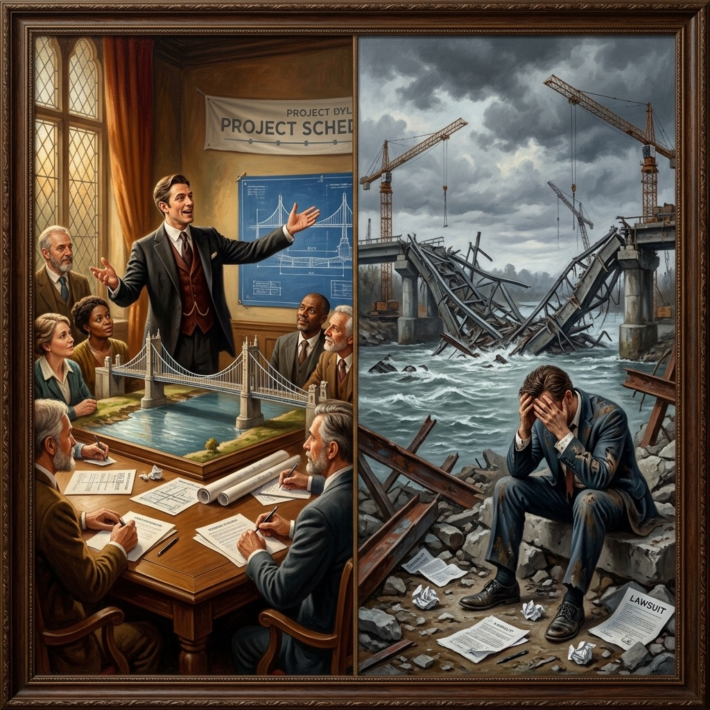
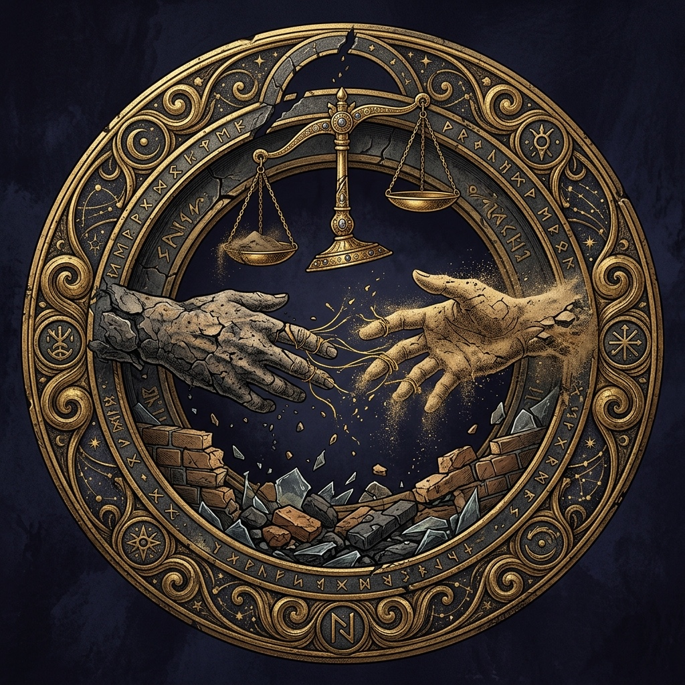
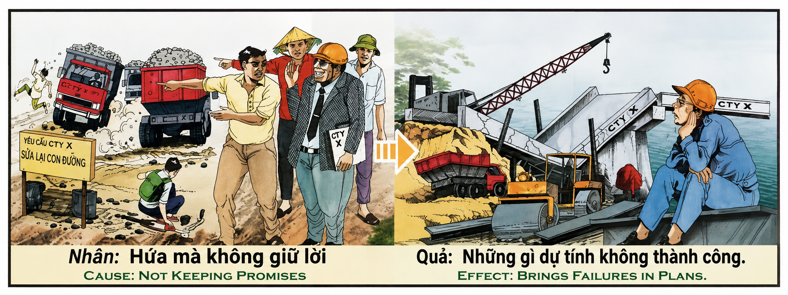

La Promesa Rota y los Cimientos de ArenaThe Broken Promise and the Foundations of SandLa Promessa Infranta e le Fondamenta di Sabbia破碎的承诺与沙上之基الوعد المكسور وأساسات الرملНарушенное Обещание и Фундамент из ПескаDas Gebrochene Versprechen und das Fundament aus SandLa Promesse Brisée et les Fondations de Sable破られた約束と砂の上の礎A Promessa Quebrada e os Alicerces de AreiaLời Hứa Bị Phá Vỡ Và Nền Móng Cát
"Cada promesa que pronuncias es un puente que el universo comienza a construir entre tu alma y la de quien confía en ti. Si cumples la promesa, el puente se completa y se convierte en piedra eterna que sostiene tu destino. Si la rompes, el puente se derrumba y los escombros no caen sobre quien esperaba tu palabra: caen sobre tus propios planes futuros. El karma no castiga al incumplidor con el sufrimiento de otros, sino con algo infinitamente más preciso: la destrucción sistemática de sus propias expectativas. Quien siembra promesas rotas cosecha proyectos que se desploman, plazos que se incumplen, puentes interiores que ya nadie quiere cruzar.""Every promise you utter is a bridge the universe begins to build between your soul and that of the one who trusts you. If you keep the promise, the bridge is completed and becomes eternal stone sustaining your destiny. If you break it, the bridge collapses and the rubble does not fall upon the one who awaited your word: it falls upon your own future plans. Karma does not punish the promise-breaker with the suffering of others, but with something infinitely more precise: the systematic destruction of their own expectations. He who sows broken promises reaps projects that collapse, deadlines that fail, inner bridges that no one wants to cross.""Ogni promessa che pronunci è un ponte che l'universo inizia a costruire tra la tua anima e quella di chi si fida di te. Se mantieni la promessa, il ponte si completa e diventa pietra eterna che sostiene il tuo destino. Se la spezzi, il ponte crolla e le macerie non cadono su chi attendeva la tua parola: cadono sui tuoi progetti futuri. Il karma non punisce chi non mantiene le promesse con la sofferenza altrui, ma con qualcosa di infinitamente più preciso: la distruzione sistematica delle proprie aspettative. Chi semina promesse infrante raccoglie progetti che crollano, scadenze non rispettate, ponti interiori che nessuno vuole più attraversare.""你说出的每一个承诺都是宇宙在你的灵魂与信任你的人之间开始建造的一座桥。如果你兑现了承诺，桥就会完工，成为支撑你命运的永恒基石。如果你打破它，桥就会倒塌，而瓦砾不会落在等待你话语的人身上——它落在你自己未来的计划上。业力并不用别人的痛苦来惩罚不守信者，而是用某种无限更精确的方式：系统性地毁灭他们自己的期望。播种破碎承诺的人，收获的是坍塌的项目、无法履行的期限、以及再无人愿意跨越的内心之桥。""كل وعد تنطق به هو جسر يبدأ الكون ببنائه بين روحك وروح من يثق بك. إذا أوفيت بالوعد، اكتمل الجسر وأصبح حجراً أبدياً يدعم مصيرك. إذا نكثته، انهار الجسر ولم تسقط أنقاضه على من انتظر كلمتك: بل تسقط على خططك المستقبلية. لا يعاقب الكارما الناكث بمعاناة الآخرين، بل بشيء أكثر دقة بما لا يقاس: التدمير المنهجي لتوقعاته الخاصة. من يزرع وعوداً مكسورة يحصد مشاريع تنهار، ومواعيد نهائية تُخلف، وجسوراً داخلية لا أحد يريد عبورها بعد الآن."«Каждое данное тобой обещание — это мост, который вселенная начинает строить между твоей душой и душой того, кто тебе доверяет. Если ты сдерживаешь обещание, мост завершается и становится вечным камнем, поддерживающим твою судьбу. Если ты его нарушаешь, мост рушится, и обломки падают не на того, кто ждал твоего слова, — они падают на твои собственные будущие планы. Карма наказывает нарушителя не страданиями других, а чем-то бесконечно более точным: систематическим разрушением его собственных ожиданий. Тот, кто сеет нарушенные обещания, пожинает рушащиеся проекты, несоблюденные сроки и внутренние мосты, по которым больше никто не хочет переходить.»„Jedes Versprechen, das du aussprichst, ist eine Brücke, die das Universum zwischen deiner Seele und der des Vertrauenden zu bauen beginnt. Hältst du das Versprechen, vollendet sich die Brücke und wird zu ewigem Stein, der dein Schicksal trägt. Brichst du es, stürzt die Brücke ein, und die Trümmer fallen nicht auf den Wartenden: sie fallen auf deine eigenen Zukunftspläne. Karma bestraft den Wortbrüchigen nicht mit dem Leiden anderer, sondern mit etwas unendlich Präziserem: der systematischen Zerstörung seiner eigenen Erwartungen. Wer gebrochene Versprechen sät, erntet einstürzende Projekte, nicht eingehaltene Fristen und innere Brücken, die niemand mehr überqueren will.""Chaque promesse que tu prononces est un pont que l'univers commence à bâtir entre ton âme et celle de qui te fait confiance. Si tu tiens ta promesse, le pont s'achève et devient pierre éternelle soutant ton destin. Si tu la brises, le pont s'effondre et les décombres ne tombent pas sur celui qui attendait ta parole : ils tombent sur tes propres projets futurs. Le karma ne punit pas le parjure par la souffrance d'autrui, mais par quelque chose d'infiniment plus précis : la destruction systématique de ses propres attentes. Qui sème des promesses brisées récolte des projets qui s'effondrent, des délais non tenus, et des ponts intérieurs que plus personne ne veut traverser."「あなたが口にするすべての約束は、あなたの魂とあなたを信頼する者の魂との間に、宇宙が架け始める橋です。約束を守れば、橋は完成し、あなたの運命を支える永遠の石となります。約束を破れば、橋は崩壊し、瓦礫はあなたの言葉を待っていた者の上にではなく、あなた自身の将来の計画の上に落ちるのです。カルマは約束を破った者を他者の苦しみによって罰するのではなく、無限に正確な方法、すなわちその者自身の期待を系統的に破壊することによって罰します。破られた約束を蒔く者は、崩壊するプロジェクト、守られない納期、そしてもはや誰も渡ろうとしない内なる橋を収穫するのです。」"Cada promessa que pronuncias é uma ponte que o universo começa a construir entre a tua alma e a de quem confia em ti. Se cumpres a promessa, a ponte completa-se e torna-se pedra eterna que sustenta o teu destino. Se a quebras, a ponte desmorona e os escombros não caem sobre quem esperava a tua palavra: caem sobre os teus próprios planos futuros. O karma não pune o incumpridor com o sofrimento de outros, mas com algo infinitamente mais preciso: a destruição sistemática das suas próprias expectativas. Quem semeia promessas quebradas colhe projetos que desabam, prazos incumpridos, pontes interiores que já ninguém quer cruzar.""Mỗi lời hứa bạn thốt ra là một cây cầu mà vũ trụ bắt đầu xây giữa linh hồn bạn và linh hồn người tin tưởng bạn. Nếu bạn giữ lời hứa, cây cầu hoàn thành và trở thành đá vĩnh cửu nâng đỡ vận mệnh bạn. Nếu bạn phá vỡ nó, cây cầu sụp đổ và đống đổ nát không rơi xuống người chờ đợi lời bạn: nó rơi xuống chính những kế hoạch tương lai của bạn. Nghiệp quả không phạt kẻ thất hứa bằng nỗi đau của người khác, mà bằng thứ chính xác vô cùng: sự hủy hoại mang tính hệ thống đối với những kỳ vọng của chính họ. Kẻ gieo lời hứa lèo sẽ gặt hái những dự án sụp đổ, những thời hạn trễ hẹn, và những cây cầu nội tâm mà không ai còn muốn bước qua."
El relieve antiguo del templo nos muestra una escena de extraordinaria actualidad: una empresa constructora (CTY X) que ha prometido reparar una carretera que sus propios camiones han destrozado. Los ciudadanos protestan con carteles exigiendo el cumplimiento. Los ejecutivos de la empresa, con gafas de sol y actitud despreocupada, señalan y se ríen. La promesa fue hecha públicamente pero nunca cumplida. El resultado kármico es devastador y de una precisión casi poética: en la siguiente escena, un puente construido por la misma empresa se ha desplomado. La maquinaria está atascada, las grúas inoperantes, y el ingeniero se agarra la cabeza con desesperación. Los planes de la empresa han fracasado. No es coincidencia: es karma.
La primera dimensión de esta ley es el principio de la arquitectura kármica de la confianza. Cada promesa que un ser humano pronuncia — ya sea en un contrato empresarial, en un «te llamaré mañana», en un «te entregaré esto el viernes», o en un voto matrimonial — crea un puente invisible en el tejido cósmico del karma. Este puente no es metafórico: es real en el plano energético sutil. Cuando la promesa se cumple, el puente se solidifica y se convierte en una estructura permanente que sostiene los cimientos del destino futuro del cumplidor. Es como si cada promesa cumplida añadiera un ladrillo de piedra a los fundamentos de tu vida. Pero cuando la promesa se rompe, ese puente no simplemente desaparece: se derrumba, y sus escombros caen directamente sobre la estructura kármica de los planes futuros del incumplidor. Así, quien no cumple su palabra descubre, con asombrosa precisión, que sus propios proyectos también se incumplen, que sus plazos también se rompen, que sus puentes también se desploman — exactamente como él hizo desplomar el puente de confianza que otros habían construido sobre su palabra.
La segunda dimensión es extraordinariamente sutil y conecta directamente con la experiencia humana contemporánea: el sesgo del exceso de confianza y el arte sagrado de la promesa honesta. Existe un sesgo cognitivo universal que los psicólogos llaman el «sesgo de planificación» (planning fallacy): la tendencia sistemática del ser humano a subestimar el tiempo, el esfuerzo y la complejidad de una tarea. El programador informático que dice «esto lo hago en dos días» cuando necesitará dos semanas. El arquitecto que promete el puente en seis meses cuando necesitará dos años. El consultor que asegura al cliente «no hay ningún problema» cuando en realidad hay treinta problemas que aún no ha descubierto. En la era de la inteligencia artificial, este sesgo se ha magnified exponencialmente: la IA parece que va a resolverlo todo, pero en la práctica surgen mil imprevistos — el modelo alucina, se queda sin tokens, la tarea era más compleja de lo previsto, o simplemente un mal día destruye la productividad esperada. Por eso, los sabios del mundo empresarial aconsejan: «Estima el coste real y luego multiplícalo por dos o por tres». No es pesimismo: es honestidad kármica. Porque prometer más de lo que puedes cumplir — aunque lo hagas con buena intención, aunque sea por entusiasmo genuino, aunque sea porque el miedo a perder el contrato te empuja — es construir un puente de arena sobre un río caudaloso. La pregunta kármica no es «¿cuánto puedo prometer para ganar?» sino «¿cuánto puedo cumplir con certeza?». El arte supremo está en conocerse a uno mismo con honestidad radical: saber dónde terminan tus capacidades reales y dónde comienzan los espejismos de tu ego.
La tercera dimensión es la más profunda y universal: la diferencia entre la promesa rota por deshonestidad y la promesa rota por autoengaño — y por qué ambas generan karma, pero de naturaleza distinta. El karma distingue con precisión láser entre dos tipos de incumplimiento. El primero es la promesa rota conscientemente: quien promete algo sabiendo que no lo va a cumplir, quien dice «sí» mirando a los ojos mientras su interior dice «nunca». Este tipo de incumplimiento genera el karma más denso y destructivo, porque implica manipulación deliberada de la confianza ajena. El segundo tipo es la promesa rota por autoengaño: quien promete algo creyendo genuinamente que puede cumplirlo, pero cuyo optimismo excesivo, sesgo de planificación o falta de autoconocimiento le impide ver la realidad. Este tipo también genera karma negativo — porque la responsabilidad de conocer los propios límites es inalienable —, pero su naturaleza es distinta: no es karma de engaño, sino karma de imprudencia espiritual. La solución kármica es la misma en ambos casos: el silencio honesto es siempre más poderoso que la promesa vacía. Es mejor decir «no estoy seguro de poder hacerlo» que prometer el mundo y entregar un puñado de arena. Es mejor decir «puedo intentarlo con un plan, pero no puedo comprometer un resultado concreto» que construir expectativas que se derrumbarán como el puente de la empresa CTY X. Jesús lo expresó con la claridad definitiva: «Que vuestro sí sea sí, y vuestro no sea no; todo lo demás viene del Maligno» (Mateo 5:37).
The ancient temple relief shows us a scene of extraordinary contemporary relevance: a construction company (CTY X) that promised to repair a road their own trucks had destroyed. Citizens protest with signs demanding fulfillment. The company executives, wearing sunglasses with a carefree attitude, point and laugh. The promise was made publicly but never kept. The karmic result is devastating and almost poetically precise: in the next scene, a bridge built by the same company has collapsed. Machinery is stuck, cranes inoperative, and the engineer clutches his head in despair. The company's plans have failed. This is not coincidence: it is karma.
The first dimension of this law is the principle of the karmic architecture of trust. Every promise a human being utters — whether in a business contract, a "I'll call you tomorrow," a "I'll deliver this by Friday," or a marriage vow — creates an invisible bridge in the cosmic fabric of karma. This bridge is not metaphorical: it is real on the subtle energetic plane. When the promise is kept, the bridge solidifies and becomes a permanent structure supporting the foundations of the keeper's future destiny. It is as if every kept promise adds a stone brick to your life's foundations. But when the promise is broken, that bridge does not simply disappear: it collapses, and its rubble falls directly onto the karmic structure of the breaker's future plans. Thus, he who fails to keep his word discovers, with astonishing precision, that his own projects also fail, his deadlines also break, his bridges also collapse — exactly as he collapsed the bridge of trust others had built upon his word.
The second dimension is extraordinarily subtle and connects directly with contemporary human experience: the overconfidence bias and the sacred art of the honest promise. There exists a universal cognitive bias that psychologists call the "planning fallacy": the systematic tendency of a human being to underestimate the time, effort, and complexity of a task. The software engineer who says "I'll have this done in two days" when it will take two weeks. The architect who promises the bridge in six months when it will take two years. The consultant who assures the client "no problem at all" when in reality there are thirty problems he has not yet discovered. In the era of artificial intelligence, this bias has been exponentially magnified: AI seems like it will solve everything, but in practice a thousand unforeseen problems arise — the model hallucinates, runs out of tokens, the task was more complex than anticipated, or simply a bad day destroys expected productivity. That is why the wise in the business world advise: "Estimate the real cost, then multiply it by two or three." This is not pessimism: it is karmic honesty. Because promising more than you can deliver — even if you do so with good intentions, even if it is out of genuine enthusiasm, even if it is because the fear of losing the contract pushes you — is building a bridge of sand over a raging river. The karmic question is not "how much can I promise to win?" but "how much can I fulfill with certainty?". The supreme art lies in knowing oneself with radical honesty: knowing where your real capabilities end and where the mirages of your ego begin.
The third dimension is the deepest and most universal: the difference between the promise broken out of dishonesty and the promise broken out of self-deception — and why both generate karma, but of a different nature. Karma distinguishes with laser precision between two types of breach. The first is the promise broken consciously: one who promises something knowing they will not keep it, who says 'yes' looking into your eyes while their interior says 'never'. This type of breach generates the densest and most destructive karma, because it involves deliberate manipulation of another's trust. The second type is the promise broken out of self-deception: one who promises something genuinely believing they can fulfill it, but whose excessive optimism, planning bias, or lack of self-knowledge prevents them from seeing reality. This type also generates negative karma — because the responsibility to know one's own limits is inalienable — but its nature is different: it is not the karma of deception, but the karma of spiritual imprudence. The karmic solution is the same in both cases: honest silence is always more powerful than an empty promise. It is better to say 'I am not sure I can do it' than to promise the world and deliver a handful of sand. It is better to say 'I can try with a plan, but I cannot commit to a specific result' than to build expectations that will collapse like the bridge of the CTY X company. Jesus expressed it with definitive clarity: 'Let your yes be yes, and your no, no; anything beyond this comes from the evil one' (Matthew 5:37).
Il rilievo antico del tempio ci mostra una scena di straordinaria attualità: un'impresa di costruzioni (CTY X) che ha promesso di riparare una strada che i suoi stessi camion hanno distrutto. I cittadini protestano con cartelli esigendo l'adempimento. I dirigenti dell'azienda, con occhiali da sole e un atteggiamento spensierato, indicano e ridono. La promessa è stata fatta pubblicamente ma non è mai stata mantenuta. Il risultato karmico è devastante e di una precisione quasi poetica: nella scena successiva, un ponte costruito dalla stessa impresa è crollato. I macchinari sono bloccati, le gru inoperanti e l'ingegnere si tiene la testa tra le mani per la disperazione. I piani dell'azienda sono falliti. Non è una coincidenza: è karma.
La prima dimensione di questa legge è il principio dell'architettura karmica della fiducia. Ogni promessa che un essere umano pronuncia — sia essa in un contratto aziendale, in un "ti chiamerò domani", in un "ti consegnerò questo entro venerdì", o in un voto matrimoniale — crea un ponte invisibile nel tessuto cosmico del karma. Questo ponte non è metaforico: è reale sul piano energetico sottile. Quando la promessa viene mantenuta, il ponte si solidifica e diventa una struttura permanente che sostiene le fondamenta del destino futuro di chi l'ha mantenuta. È come se ogni promessa adempiuta aggiungesse un mattone di pietra alle fondamenta della tua vita. Ma quando la promessa viene infranta, quel ponte non scompare semplicemente: crolla e le sue macerie cadono direttamente sulla struttura karmica dei piani futuri di chi non ha mantenuto la parola. Così, chi non mantiene la parola scopre, con sorprendente precisione, che anche i propri progetti falliscono, che le proprie scadenze si infrangono e che i propri ponti crollano — esattamente come ha fatto crollare il ponte di fiducia che altri avevano costruito sulla sua parola.
La seconda dimensione è straordinariamente sottile e si collega direttamente all'esperienza umana contemporanea: il bias dell'eccesso di fiducia e l'arte sacra della promessa onesta. Esiste un bias cognitivo universale che gli psicologi chiamano "fallacia della pianificazione" (planning fallacy): la tendenza sistematica dell'essere umano a sottovalutare il tempo, lo sforzo e la complessità di un compito. Il programmatore informatico che dice "faccio questo in due giorni" quando gli serviranno due settimane. L'architetto che promette il ponte in sei mesi quando gli serviranno due anni. Il consulente che assicura al cliente "nessun problema" quando in realtà ci sono trenta problemi che non ha ancora scoperto. Nell'era dell'intelligenza artificiale, questo bias si ha amplificato esponenzialmente: l'IA sembra sul punto di risolvere tutto, ma nella pratica sorgono mille imprevisti — il modello allucina, esaurisce i token, il compito era più complesso del previsto, o semplicemente una cattiva giornata distrugge la produttività attesa. Per questo i saggi del mondo aziendale consigliano: "Stima il costo reale e poi moltiplicalo per due o per tre". Non è pessimismo: è onestà karmica. Perché promettere più di quanto puoi mantenere — anche se lo fai con buone intenzioni, per entusiasmo genuino, o perché la paura di perdere il contratto ti spinge a farlo — significa costruire un ponte di sabbia su un fiume impetuoso. La domanda karmica non è "quanto posso promettere per vincere?" ma "quanto posso mantenere con certezza?". L'arte suprema sta nel conoscere se stessi con onestà radicale: sapere dove finiscono le proprie capacità reali e dove iniziano i miraggi del proprio ego.
La terza dimensione è la più profonda e universale: la differenza tra la promessa infranta per disonestà e la promessa infranta per autoinganno — e perché entrambe generano karma, ma di natura diversa. Il karma distingue con precisione laser tra due tipi di inadempimento. Il primo è la promessa infranta consapevolmente: colui che promette qualcosa sapendo che non la manterrà, colui che dice "sì" guardando negli occhi mentre il suo interno dice "mai". Questo tipo di inadempimento genera il karma più denso e distruttivo, poiché implica la manipolazione deliberata della fiducia altrui. Il secondo tipo è la promessa infranta per autoinganno: colui che promette qualcosa credendo sinceramente di poterla mantenere, ma il cui ottimismo eccessivo, bias di pianificazione o mancanza di autoconsapevolezza gli impedisce di vedere la realtà. Anche questo tipo genera karma negativo — perché la responsabilità di conoscere i propri limiti è inalienabile —, ma la sua natura è diversa: non è karma di inganno, bensì karma di imprudenza spirituale. La soluzione karmica è la stessa in entrambi i casi: il silenzio onesto è sempre più potente della promessa vuota. È meglio dire "non sono sicuro di poterlo fare" che promettere il mondo e consegnare un pugno di sabbia. È meglio dire "posso provarci con un piano, ma non posso impegnarmi per un risultato concreto" che costruire aspettative che crolleranno come il ponte dell'azienda CTY X. Gesù lo espresse con chiarezza definitiva: «Sia il vostro parlare sì, sì, no, no; il di più viene dal Maligno» (Matteo 5:37).
古庙的古老浮雕向我们展示了一个极具当代意义的场景：一家建筑公司（CTY X）承诺修复一条被自家卡车毁坏的道路。市民们举着牌子抗议，要求履行承诺。公司高管戴着墨镜，态度漫不经心，指指点点并嘲笑。承诺是公开做出的，但从未兑现。业力的结果是毁灭性的，且精准得近乎诗意：在下一个画面中，同一家公司建造的一座桥梁坍塌了。机械卡住，起重机瘫痪，工程师绝望地抱头。公司的计划失败了。这不是巧合：这是业力。
这条法则的第一个维度是信任的业力建筑原则。人类做出的每一个承诺——无论是在商业合同中、在说一句“我明天给你打电话”、在“我周五把这个交给你”中，还是在婚姻誓言中——都在业力的宇宙织物中创建了一座无形的桥梁。这座桥梁并非比喻：它在微妙的能量层面上是真实存在的。当承诺兑现时，桥梁就会固化，成为支撑履约者未来命运的永久结构。就好像每一个兑现的承诺都在你生命的基础中增加了一块石砖。但当承诺被打破时，那座桥梁并不会简单地消失：它会坍塌，其瓦砾会直接落在违约者未来计划的业力结构上。因此，不守信用的人会以惊人的精准度发现，他们自己的项目也未能兑现，他们的期限也被打破，他们的桥梁也坍塌了——正如他们亲手毁掉别人基于其诺言建立的信任之桥一样。
第二个维度与当代人类的经验直接相连：过度自信偏见与诚实承诺的神圣艺术。存在一种心理学家称为“计划谬误”（planning fallacy）的普遍认知偏见：人类系统性地低估任务的时间、精力和复杂性。程序员说“这事我两天就能搞定”，而实际却需要两周。建筑师承诺在六个月内建好桥梁，而实际需要两年。顾问向客户保证“没问题”，而实际上有三十个他尚未发现的问题。在人工智能时代，这种偏见被指数级放大了：AI似乎能解决一切，但在实践中却会出现一千个不可预测的状况——模型幻觉、代币耗尽、任务比预期更复杂，或者仅仅是一个糟糕的日子就摧毁了预期的生产力。因此，商界智者建议：“估算真实成本，然后乘以二或三。”这不是悲观主义：这是业力诚实。因为承诺超出你所能兑现的范围——即使你是出于好意，即使是出于真正的热情，即使是因为害怕失去合同而被迫做出——就是在湍急的河流上建造一座沙桥。业力的问题不是“为了赢，我能承诺多少？”而是“我能确切履行多少？”至高无上的艺术在于以彻底的诚实认识自己：清楚地知道自己真实能力的边界在哪里，以及自我的幻象从哪里开始。
第三个维度是最深刻和最普遍的：因不诚实而打破的承诺与因自欺而打破的承诺之间的区别——以及为什么两者都产生业力，但性质不同。业力以激光般的精准度区分两种违约行为。第一种是故意打破的承诺：承诺某事却明知自己不会去履行，看着对方的眼睛说“是”，内心却说“绝不”。这种违约会产生最深重、最具破坏性的业力，因为它涉及对他人信任的蓄意操纵。第二种是通过自欺而打破的承诺：承诺某事且真诚地相信自己能够兑现，但过度乐观、计划偏见或缺乏自我认知使其无法看清现实。这种类型也产生负面业力——因为了解自身局限性的责任是不可剥夺的——但其性质是不同的：它不是欺骗的业力，而是精神轻率的业力。在这两种情况下，业力的解决方案都是一样的：诚实的沉默永远比空洞的承诺更有力量。说一句“我不确定能做到”比承诺整个世界却只能给出一捧沙子要好。说一句“我可以按照计划尝试，但我无法承诺具体的结果”比建立一个像 CTY X 公司的桥梁那样最终会坍塌的期望要好。耶稣以终极的清晰表达了这一点：“你们的话，是就说是，不是就说不是；若再多说，就是出于那恶者”（马太福音5:37）。
يظهر لنا نقش المعبد القديم مشهدًا ذا صلة استثنائية بالواقع المعاصر: شركة إنشاءات (CTY X) وعدت بإصلاح طريق دمرته شاحناتها الخاصة. المواطنون يحتجون بلافتات تطالب بالوفاء بالوعد. مديرو الشركة، بنظاراتهم الشمسية وموقفهم اللامبالي، يشيرون ويضحكون. قُطع الوعد علنًا ولكنه لم يُنفَّذ أبدًا. النتيجة الكارمية مدمرة وذات دقة شعرية تقريبًا: في المشهد التالي، انهار جسر بنته نفس الشركة. الآلات عالقة، الرافعات معطلة، والمهندس يمسك رأسه بيأس. لقد فشلت خطط الشركة. هذه ليست مصادفة: إنها الكارما.
البعد الأول لهذا القانون هو مبدأ العمارة الكارمية للثقة. كل وعد ينطق به إنسان — سواء في عقد تجاري، أو في قول «سأتصل بك غدًا»، أو «سأسلمك هذا يوم الجمعة»، أو في نذر زواج — يخلق جسرًا غير مرئي في النسيج الكوني للكارما. هذا الجسر ليس مجازيًا: بل هو حقيقي على المستوى الطاقي الدقيق. عندما يُوفى بالوعد، يتصلب الجسر ويصبح بنية دائمة تدعم أسس المصير المستقبلي لمن أوفى به. وكأن كل وعد تم الوفاء به يضيف لبنة حجرية إلى أساسات حياتك. ولكن عندما يُنكث الوعد، فإن هذا الجسر لا يختفي ببساطة: بل ينهار، وتسقط أنقاضه مباشرة على البنية الكارمية للخطط المستقبلية للناكث. وهكذا، فإن من لا يفي بكلمته يكتشف، بدقة مذهلة، أن مشاريعه الخاصة تفشل أيضًا، وأن مواعيده النهائية تُكسر أيضًا، وأن جسوره تنهار أيضًا — تمامًا كما تسبب في انهيار جسر الثقة الذي بناه الآخرون على كلمته.
البعد الثاني دقيق للغاية ويتصل مباشرة بالتجربة الإنسانية المعاصرة: انحياز الثقة المفرطة وفن الوعد الصادق المقدس. هناك انحياز معرفي عالمي يسميه علماء النفس «مغالطة التخطيط» (planning fallacy): وهو ميل منهجي لدى البشر للتقليل من الوقت والجهد والتعقيد اللازمين لإنجاز مهمة ما. مبرمج الكمبيوتر الذي يقول «سأنهيه في يومين» بينما سيحتاج في الواقع إلى أسبوعين. المهندس المعماري الذي يعد بالجسر في ستة أشهر بينما سيحتاج إلى عامين. المستشار الذي يضمن للعميل «لا توجد مشكلة» بينما يوجد في الواقع ثلاثون مشكلة لم يكتشفها بعد. في عصر الذكاء الاصطناعي، تضخم هذا الانحياز بشكل أُسي: تبدو الذكاء الاصطناعي وكأنها ستحل كل شيء، ولكن في الممارسة العملية تظهر آلاف العقبات غير المتوقعة — يهلوس النموذج، ينفد من التوكنز، كانت المهمة أكثر تعقيدًا مما كان متوقعًا، أو ببساطة يوم سيء يدمر الإنتاجية المتوقعة. لهذا السبب، ينصح حكماء عالم الأعمال: «قدّر التكلفة الفعلية ثم اضربها in اثنين أو ثلاثة». هذا ليس تشاؤمًا: بل هو صدق كارمي. لأن الوعد بأكثر مما يمكنك الوفاء به — حتى لو فعلت ذلك بنية طيبة، أو بدافع الحماس الصادق، أو لأن الخوف من خسارة العقد يدفعك — هو بناء جسر من رمل فوق نهر هادر. السؤال الكارمي ليس «كم يمكنني أن أعد لأربح؟» بل «كم يمكنني أن أفي بيقين؟». يكمن الفن الأسمى في معرفة المرء لنفسه بصدق راديكالي: أن تعرف أين تنتهي قدراتك الحقيقية وأين تبدأ أوهام أناك.
البعد الثالث هو الأعمق والأكثر شمولية: الفرق بين الوعد المنكوث بسبب عدم الأمانة والوعد المنكوث بسبب خداع الذات — ولماذا يولد كلاهما كارما، ولكن بطبيعة مختلفة. تميز الكارما بدقة متناهية بين نوعين من الإخلال بالوعد. الأول هو الوعد المنكوث بوعي: من يعد بشيء وهو يعلم أنه لن يفي به، من يقول «نعم» ناظراً في عينيك بينما يقول داخله «أبداً». هذا النوع من الإخلال بالوعد يولد الكارما الأكثر كثافة وتدميراً، لأنه ينطوي على تلاعب متعمد بثقة الآخرين. والنوع الثاني هو الوعد المنكوث بسبب خداع الذات: من يعد بشيء وهو يعتقد بصدق أنه قادر على الوفاء به، ولكن تفاؤله المفرط، أو انحياز التخطيط لديه، أو افتقاره إلى معرفة الذات يمنعه من رؤية الواقع. هذا النوع يولد أيضاً كارما سلبية — لأن مسؤولية معرفة المرء بحدوده هي مسؤولية غير قابلة للتجزئة — ولكن طبيعتها مختلفة: فهي ليست كارما خداع، بل هي كارما تهور روحي. الحل الكارمي واحد في كلتا الحالتين: الصمت الصادق دائماً أقوى من الوعد الفارغ. من الأفضل أن تقول «سأفعل ما بوسعي لكنني لست متأكداً» بدلاً من أن تعد بالكون ثم تقدم حفنة من الرمل. ومن الأفضل أن تقول «يمكنني المحاولة بخطة واضحة، لكن لا يمكنني الالتزام بنتيجة محددة» بدلاً من بناء توقعات ستنهار كجسر شركة CTY X. وقد عبر يسوع عن ذلك بوضوح قاطع: «ليكن كلامكم: نعم نعم، لا لا. وما زاد على ذلك فهو من الشرير» (متى 5:37).
Барельеф древнего храма показывает нам сцену необычайной актуальности: строительная компания (CTY X) обещала отремонтировать дорогу, которую разрушили её собственные грузовики. Граждане протестуют с плакатами, требуя выполнения обещания. Руководители компании в солнцезащитных очках и с беззаботным видом указывают пальцем и смеются. Обещание было дано публично, но так и не было выполнено. Кармический результат опустошителен и обладает почти поэтической точностью: в следующей сцене мост, построенный той же компанией, рухнул. Техника застряла, краны не работают, а инженер в отчаянии хватается за голову. Планы компании провалились. Это не совпадение: это карма.
Первое измерение этого закона — принцип кармической архитектуры доверия. Каждое обещание, которое произносит человек — будь то в деловом контракте, в словах «я позвоню тебе завтра», «я доставлю это в пятницу» или в брачном обряде — создает невидимый мост в космической ткани кармы. Этот мост не является метафорой: он реален на тонком энергетическом плане. Когда обещание выполняется, мост укрепляется и становится постоянной структурой, поддерживающей фундамент будущей судьбы того, кто его выполнил. Это как если бы каждое выполненное обещание добавляло каменный кирпич в основание вашей жизни. Но когда обещание нарушается, этот мост не просто исчезает: он рушится, и его обломки падают прямо на кармическую структуру будущих планов нарушителя. Таким образом, тот, кто не держит своего слова, с поразительной точностью обнаруживает, что его собственные проекты также срываются, его сроки нарушаются, а его мосты рушатся — точно так же, как он обрушил мост доверия, который другие построили на его слове.
Второе измерение необычайно тонко и напрямую связано с современным человеческим опытом: предвзятость чрезмерной уверенности и священное искусство честного обещания. Существует универсальное когнитивное искажение, которое психологи называют «ошибкой планирования» (planning fallacy): систематическая склонность человека недооценивать время, усилия и сложность задачи. Программист, который говорит: «Я сделаю это за два дня», когда ему потребуется две недели. Архитектор, обещающий мост через шесть месяцев, когда потребуется два года. Консультант, заверяющий клиента: «Нет никаких проблем», когда на самом деле есть тридцать проблем, которые он еще не обнаружил. В эпоху искусственного интеллекта это искажение усилилось по экспоненте: кажется, что ИИ решит всё, но на практике возникают тысячи непредвиденных обстоятельств — модель галлюцинирует, заканчиваются токены, задача оказывается сложнее, чем ожидалось, или просто неудачный день рушит всю запланированную продуктивность. Вот почему мудрецы из мира бизнеса советуют: «Оцените реальную стоимость, а затем умножьте её на два или на три». Это не пессимизм: это кармическая честность. Потому что обещать больше, чем вы можете выполнить — даже если вы делаете это с благими намерениями, из искреннего энтузиазма или из-за страха потерять контракт — значит строить мост из песка над бурной рекой. Кармический вопрос состоит не в том, «сколько я могу пообещать, чтобы победить?», а в том, «сколько я могу гарантированно выполнить?». Высшее искусство заключается в том, чтобы познать себя с радикальной честностью: знать, где заканчиваются твои реальные возможности и где начинаются миражи твоего эго.
Третье измерение — самое глубокое и всеобщее: разница между обещанием, нарушенным из-за нечестности, и обещанием, нарушенным из-за самообмана — и почему оба они порождают карму, но разного характера. Карма с лазерной точностью различает два типа неисполнения обязательств. Первый — это сознательно нарушенное обещание: тот, кто обещает что-то, зная, что не выполнит этого, кто говорит «да», глядя в глаза, в то время как внутри звучит «никогда». Этот тип неисполнения порождает самую плотную и разрушительную карму, поскольку предполагает преднамеренное манипулирование чужим доверием. Второй тип — обещание, нарушенное из-за самообмана: тот, кто обещает что-то, искренне веря, что сможет это выполнить, но чей избыточный оптимизм, предвзятость планирования или недостаток самопознания мешают ему увидеть реальность. Этот тип также порождает негативную карму — поскольку ответственность за знание собственных пределов неотъемлема —, но его природа иная: это не карма обмана, а карма духовного легкомыслия. Кармическое решение в обоих случаях одинаково: честное молчание всегда сильнее пустого обещания. Лучше сказать: «Я не уверен, что смогу это сделать», чем обещать золотые горы и принести пригоршню песка. Лучше сказать: «Я могу попробовать составить план, но не могу гарантировать конкретный результат», чем строить ожидания, которые рухнут, как мост компании CTY X. Иисус выразил это с предельной ясностью: «Но да будет слово ваше: да, да; нет, нет; а что сверх этого, то от лукавого» (Матфея 5:37).
Das antike Tempelrelief zeigt uns eine Szene von außergewöhnlicher Aktualität: Ein Bauunternehmen (CTY X) hat versprochen, eine Straße zu reparieren, die seine eigenen Lastwagen zerstört haben. Bürger protestieren mit Schildern und fordern die Einhaltung. Die Manager des Unternehmens, mit Sonnenbrillen und einer unbeschwerten Haltung, zeigen darauf und lachen. Das Versprechen wurde öffentlich gegeben, aber nie eingelöst. Das karmische Ergebnis ist verheerend und von fast poetischer Präzision: In der nächsten Szene ist eine von derselben Firma gebaute Brücke eingestürzt. Die Maschinen stecken fest, die Kräne sind funktionsunfähig und der Ingenieur hält sich verzweifelt den Kopf. Die Pläne des Unternehmens sind gescheitert. Das ist kein Zufall: Es ist Karma.
Die erste Dimension dieses Gesetzes ist das Prinzip der karmischen Architektur des Vertrauens. Jedes Versprechen, das ein Mensch ausspricht – sei es in einem Geschäftsvertrag, in einem „Ich rufe dich morgen an“, in einem „Ich liefere dir das am Freitag“ oder in einem Eheversprechen – schafft eine unsichtbare Brücke im kosmischen Gewebe des Karma. Diese Brücke ist nicht metaphorisch: Sie ist auf der feinstofflichen energetischen Ebene real. Wenn das Versprechen erfüllt wird, verfestigt sich die Brücke und wird zu einer dauerhaften Struktur, die die Fundamente des zukünftigen Schicksals des Erfüllers stützt. Es ist, als ob jedes erfüllte Versprechen einen Ziegelstein aus Stein zu den Fundamenten deines Lebens hinzufügt. Wenn das Versprechen jedoch gebrochen wird, verschwindet diese Brücke nicht einfach: Sie stürzt ein, und ihre Trümmer fallen direkt auf die karmische Struktur der zukünftigen Pläne des Wortbrüchigen. So entdeckt derjenige, der sein Wort nicht hält, mit erstaunlicher Präzision, dass seine eigenen Projekte ebenfalls scheitern, seine Fristen gebrochen werden und seine Brücken einstürzen – genau so, wie er die Brücke des Vertrauens einstürzen ließ, die andere auf sein Wort gebaut hatten.
Die zweite Dimension ist außerordentlich subtil und verbindet sich direkt mit der zeitgenössischen menschlichen Erfahrung: der Bias des Übervertrauens und die heilige Kunst des ehrlichen Versprechens. Es gibt einen universellen kognitiven Bias, den Psychologen die „Planungsillusion“ (planning fallacy) nennen: die systematische Tendenz des Menschen, Zeit, Aufwand und Komplexität einer Aufgabe zu unterschätzen. Der Programmierer, der sagt: „Das mache ich in zwei Tagen“, obwohl er zwei Wochen benötigt. Der Architekt, der die Brücke in sechs Monaten verspricht, obwohl er zwei Jahre braucht. Der Berater, der dem Kunden versichert: „Es gibt kein Problem“, obwohl es in Wirklichkeit dreißig Probleme gibt, die er noch nicht entdeckt hat. Im Zeitalter der künstlichen Intelligenz hat sich dieser Bias exponentiell verstärkt: Die KI scheint alles lösen zu können, aber in der Praxis entstehen tausend unvorhergesehene Ereignisse – das Modell halluziniert, die Tokens gehen aus, die Aufgabe war komplexer als erwartet oder einfach ein schlechter Tag zerstört die erwartete Produktivität. Deshalb raten die Weisen der Geschäftswelt: „Schätze die realen Kosten und multipliziere sie dann mit zwei oder drei.“ Das ist kein Pessimismus: Es ist karmische Ehrlichkeit. Denn mehr zu versprechen, als man halten kann – auch wenn man es in guter Absicht tut, aus echtem Enthusiasmus oder weil die Angst, den Vertrag zu verlieren, einen dazu drängt –, bedeutet, eine Brücke aus Sand über einen reißenden Fluss zu bauen. Die karmische Frage ist nicht: „Wie viel kann ich versprechen, um zu gewinnen?“, sondern „Wie viel kann ich mit Sicherheit erfüllen?“. Die höchste Kunst liegt darin, sich selbst mit radikaler Ehrlichkeit zu kennen: zu wissen, wo die eigenen realen Fähigkeiten enden und wo die Trugbilder des eigenen Egos beginnen.
Die dritte Dimension ist die tiefste und universellste: der Unterschied zwischen dem aus Unehrlichkeit gebrochenen Versprechen und dem aus Selbsttäuschung gebrochenen Versprechen – und warum beide Karma erzeugen, aber von unterschiedlicher Natur. Das Karma unterscheidet mit Laserpräzision zwischen zwei Arten von Pflichtverletzungen. Die erste ist das bewusst gebrochene Versprechen: Wer etwas verspricht und weiß, dass er es nicht halten wird, wer „Ja“ sagt und dem anderen in die Augen blickt, während sein Inneres „Niemals“ sagt. Diese Art von Pflichtverletzung erzeugt das dichteste und destruktivste Karma, da sie eine bewusste Manipulation des Vertrauens anderer beinhaltet. Die zweite Art ist das aus Selbsttäuschung gebrochene Versprechen: Wer etwas verspricht und aufrichtig glaubt, es halten zu können, dessen übermäßiger Optimismus, Planungsillusion oder mangelnde Selbsterkenntnis ihn jedoch daran hindert, die Realität zu sehen. Auch diese Art erzeugt negatives Karma – da die Verantwortung, die eigenen Grenzen zu kennen, unveräußerlich ist –, aber ihre Natur ist eine andere: Es ist kein Karma des Betrugs, sondern ein Karma der spirituellen Leichtfertigkeit. Die karmische Lösung ist in beiden Fällen dieselbe: Ehrliches Schweigen ist immer mächtiger als ein leeres Versprechen. Es ist besser zu sagen: „Ich bin nicht sicher, ob ich es tun kann“, als die Welt zu versprechen und eine Handvoll Sand zu liefern. Es ist besser zu sagen: „Ich kann es mit einem Plan versuchen, aber ich kann kein konkretes Ergebnis zusagen“, als Erwartungen zu wecken, die wie die Brücke der Firma CTY X einstürzen werden. Jesus drückte es mit endgültiger Klarheit aus: „Euer Ja sei ein Ja, euer Nein ein Nein; was darüber ist, das ist vom Bösen“ (Matthäus 5:37).
Le relief du temple ancien nous montre une scène d'une actualité extraordinaire : une entreprise de construction (CTY X) qui a promis de réparer une route que ses propres camions ont détruite. Les citoyens protestent avec des pancartes pour exiger le respect de la promesse. Les dirigeants de l'entreprise, avec des lunettes de soleil et une attitude désinvolte, pointent du doigt et rient. La promesse a été faite publiquement mais n'a jamais été tenue. Le résultat karmique est dévastateur et d'une précision presque poétique : dans la scène suivante, un pont construit par la même entreprise s'est effondré. Les machines sont bloquées, les grues inopérantes, et l'ingénieur se prend la tête entre les mains de désespoir. Les plans de l'entreprise ont échoué. Ce n'est pas une coïncidence : c'est le karma.
La première dimension de cette loi is le principe de l'architecture karmique de la confiance. Chaque promesse qu'un être humain prononce — que ce soit dans un contrat d'affaires, un « je t'appellerai demain », un « je te livrerai cela vendredi » ou un vœu de mariage — crée un pont invisible dans le tissu cosmique du karma. Ce pont n'est pas métaphorique : il est réel sur le plan énergétique subtil. Quand la promesse est tenue, le pont se solidifie et devient une structure permanente qui soutient les fondations du destin futur de celui qui l'a respectée. C'est comme si chaque promesse tenue ajoutait une brique de pierre aux fondations de votre vie. Mais quand la promesse est brisée, ce pont ne disparaît pas simplement : il s'effondre, et ses décombres tombent directement sur la structure karmique des projets futurs de celui qui a manqué à sa parole. Ainsi, celui qui ne tient pas sa parole découvre, avec une précision étonnante, que ses propres projets échouent également, que ses délais sont également dépassés, que ses ponts s'effondrent — exactement comme il a fait s'effondrer le pont de confiance que les autres avaient construit sur sa parole.
La deuxième dimension est extraordinairement subtile et se connecte directement à l'expérience humaine contemporaine : le biais de surconfiance et l'art sacré de la promesse honnête. Il existe un biais cognitif universel que les psychologues appellent l'« illusion de planification » (planning fallacy) : la tendance systématique de l'être humain à sous-estimer le temps, l'effort et la complexité d'une tâche. Le programmeur informatique qui dit « j'en ai pour deux jours » alors qu'il lui faudra deux semaines. L'architecte qui promet le pont en six mois alors qu'il lui faudra deux ans. Le consultant qui assure au client « il n'y a aucun problème » alors qu'il y a en réalité trente problèmes qu'il n'a pas encore découverts. À l'ère de l'intelligence artificielle, ce biais s'est amplifié de façon exponentielle : l'IA semble être capable de tout résoudre, mais dans la pratique, mille imprévus surgissent — le modèle hallucine, se retrouve à court de tokens, la tâche était plus complexe que prévu, ou simplement un mauvais jour détruit la productivité attendue. C'est pourquoi les sages du monde des affaires conseillent : « Estimez le coût réel, puis multipliez-le par deux ou trois. » Ce n'est pas du pessimisme : c'est de l'honnêteté karmique. Car promettre plus que ce que l'on peut tenir — même avec de bonnes intentions, par enthousiasme sincère, ou parce que la peur de perdre le contrat vous y pousse — revient à construire un pont de sable sur un fleuve impétueux. La question karmique n'est pas « combien puis-je promettre pour l'emporter ? » mais « combien puis-je accomplir avec certitude ? ». L'art suprême consiste à se connaître soi-même avec une honnêteté radicale : savoir où s'arrêtent vos capacités réelles et où commencent les mirages de votre ego.
La troisième dimension est la plus profonde et la plus universelle : la différence entre la promesse brisée par malhonnêteté et la promesse brisée par auto-illusion — et pourquoi toutes deux génèrent du karma, mais de nature différente. Le karma distingue avec une précision laser deux types de manquement. Le premier est la promesse brisée consciemment : celui qui promet quelque chose en sachant qu'il ne le tiendra pas, qui dit « oui » en regardant dans les yeux alors que son for intérieur dit « jamais ». Ce type de manquement génère le karma le plus dense et le plus destructeur, car il implique une manipulation délibérée de la confiance d'autrui. Le second type est la promesse brisée par auto-illusion : celui qui promet quelque chose en croyant sincèrement pouvoir le tenir, mais dont l'optimisme excessif, le biais de planification ou le manque de connaissance de soi l'empêche de voir la réalité. Ce type génère également du karma négatif — car la responsabilité de connaître ses propres limites est inaliénable —, mais sa nature est différente : ce n'est pas un karma de tromperie, mais un karma d'imprudence spirituelle. La solution karmique est la même dans les deux cas : le silence honnête est toujours plus puissant que la promesse vide. Il est préférable de dire « je ne suis pas sûr de pouvoir le faire » que de promettre la lune et de livrer une poignée de sable. Il est préférable de dire « je peux essayer avec un plan, mais je ne peux pas m'engager sur un résultat précis » que de susciter des attentes qui s'effondreront comme le pont de l'entreprise CTY X. Jésus l'a exprimé avec une clarté définitive : « Que votre oui soit oui, que votre non soit non ; tout ce qui y est ajouté vient du Malin » (Matthieu 5:37).
古代寺院の浮彫りは、極めて現代的な場面を私達に見せています：建設会社（CTY X）が自社のトラックが破壊した道路の修復を約束しました。市民たちはプラカードを掲げて約束の履行を求めて抗議しています。会社の幹部たちはサングラスをかけ、不遜な態度で指を指して笑っています。約束は公に行われましたが、決して守られませんでした。カルマの結果は壊滅的であり、ほとんど詩的なまでの精度を持っています：次の場面では、同じ会社が建設した桥が崩壊しています。重機は立ち往生し、クレーンは機能せず、技術者は絶望して頭を抱えています。会社の計画は失敗に終わりました。これは偶然ではありません。カルマです。
この法則の第一の次元は信頼のカルマ的建築の原理です。人間が口にするすべての約束——ビジネス契約であれ、「明日電話する」という言葉であれ、「金曜日までにこれを届ける」という約束であれ、あるいは結婚の誓いであれ——は、カルマの宇宙の織物の中に目に見えない橋を架けます。この橋は比喩的なものではなく、微細なエネルギーの次元においてリアルに存在するものです。約束が守られると、橋は固まり、約束を守った者の将来の運命の土台を支える永続的な構造になります。それはまるで、守られた約束の一つ一つが、あなたの人生の基礎に石のレンガを追加していくかのようです。しかし約束が破られると、その橋は単に消え去るのではなく、崩壊し、その瓦礫は約束を破った者の将来の計画のカルマ的構造の上に直接落下します。こうして、約束を守らない者は、驚くほどの精度で、自分自身のプロジェクトも未完に終わり、納期も破られ、橋も崩れ落ちることに気づくのです。まさに彼が、自分の言葉を信じて他の人々が築いた信頼の橋を崩壊させたのと同じように。
この法則の第二の次元は非常に精妙であり、現代の人間経験に直接結びついています：過信バイアスと誠実な約束の技術。心理学者が「計画の誤謬」（planning fallacy）と呼ぶ普遍的な認知バイアスが存在します。これは、人間がタスクの時間、労力、複雑さを系統的に過小評価する傾向のことです。プログラマーが「これは2日でできます」と言いながら、実際には2週間必要になるケース。建築家が「6ヶ月で橋を架けます」と約束しながら、実際には2年かかるケース。コンサルタントが顧客に「全く問題ありません」と請け合いながら、実際にはまだ発見していない問題が30個もあるケース。人工知能の時代において、このバイアスは指数関数的に増幅されました。AIがすべてを解決してくれるように見えますが、実際には千もの不測の事態が発生します。モデルがハルシネーションを起こし、トークンが不足し、タスクが予想以上に複雑であったり、あるいは単に調子の悪い日が予想された生産性を破壊したりします。だからこそ、ビジネス界の賢人たちは「実際のコストを見積もり、それを2倍または3倍にしなさい」と助言するのです。これは悲観主義ではなく、「カルマの誠実さ」です。なぜなら、たとえ善意からであれ、純粋な熱意からであれ、あるいは契約を失うことへの恐れからであれ、実行できる以上の約束をすることは、激流の上に砂の橋を架けるようなものだからです。カルマの問いは「勝つためにどれだけ約束できるか」ではなく、「どれだけ確実に実行できるか」です。至高の芸術は、根源的な誠実さを持って自分自身を知ることにあります。自分の本当の能力がどこで終わり、エゴの蜃気楼がどこから始まるのかを知ることです。
この法則の第三の次元は最も深く普遍的です：不正直による約束違反と自己欺瞞による約束違反の違い——そしてなぜ両方がカルマを生み出すものの、その性質が異なるのかということです。カルマは、2種類の約束違反をレーザーのような精度で区別します。1つ目は、意識的に破られた約束です。守るつもりがないことを知りながら何かを約束し、相手の目を見て「はい」と言いながら、心の中では「絶対に守らない」と思っている者です。このタイプの約束違反は、他者の信頼に対する意図的な操作を伴うため、最も密度が高く破壊的なカルマを生み出します。2つ目は、自己欺瞞によって破られた約束です。自分には実行できると本気で信じて何かを約束したものの、過度な楽観主義、計画の誤謬、あるいは自己認識の不足によって現実が見えなくなっている者です。このタイプも負のカルマを生み出します。自分の限界を知る責任は放棄できないものだからです。しかしその性質は異なります。それは欺瞞のカルマではなく、「精神的軽率さ」のカルマです。どちらの場合も、カルマ的解決策は同じです。誠実な沈黙は、空虚な約束よりも常に強力です。「できるかどうか確信がない」と言う方が、世界を約束して一掴みの砂を渡すよりも良いのです。「計画を立てて挑戦することはできるが、具体的な結果を約束することはできない」と言う方が、CTY X社の橋のように崩壊する期待を抱かせるよりも良いのです。イエスは決定的な明晰さでこれを表現しました：「あなたがたの『はい』は『はい』に、『いいえ』は『いいえ』にしなさい。それ以上のことは悪から出るのです」（マタイ5:37）。
O relevo do templo antigo mostra-nos uma cena de extraordinária atualidade: uma empresa de construção (CTY X) que prometeu reparar uma estrada que os seus próprios camiões destruíram. Os cidadãos protestam com cartazes exigindo o cumprimento. Os executivos da empresa, com óculos de escuros e atitude despreocupada, apontam e riem-se. A promessa foi feita publicamente mas nunca cumplida. O resultado cármico é devastador e de uma precisão quase poética: na cena seguinte, uma ponte construída pela mesma empresa desabou. A maquinaria está atolada, as gruas inoperantes, e o engenheiro agarra a cabeça em desespero. Os planos da empresa fracassaram. Não é coincidência: é karma.
A primeira dimensão desta lei é o princípio da arquitetura cármica da confiança. Cada promessa que um ser humano pronuncia — seja num contrato empresarial, num «ligar-te-ei amanhã», num «entregar-te-ei isto na sexta-feira» ou num voto matrimonial — cria uma ponte invisível no tecido cósmico do karma. Esta ponte não é metafórica: é real no plano energético subtil. Quando a promessa é cumprida, a ponte solidifica-se e torna-se uma estrutura permanente que apoia os alicerces do destino futuro do cumpridor. É como se cada promessa cumprida adicionasse um tijolo de pedra aos fundamentos da tua vida. Mas quando a promessa é quebrada, essa ponte não simplesmente desaparece: desmorona-se, e os seus escombros caem diretamente sobre a estrutura cármica dos planos futuros do incumpridor. Assim, quem não cumpre a sua palavra descobre, com assombrosa precisão, que os seus próprios projetos também fracassam, que os seus prazos também se quebram e que as suas pontes também desabam — exatamente como ele fez desabar a ponte de confiança que outros tinham construído sobre a sua palavra.
A segunda dimensão é extraordinariamente subtil e liga-se diretamente à experiência humana contemporânea: o viés do excesso de confiança e a arte sagrada da promessa honesta. Existe um viés cognitivo universal que os psicólogos chamam de «falácia do planeamento» (planning fallacy): a tendência sistemática do ser humano para subestimar o tempo, o esforço e a complexidade de uma tarefa. O programador informático que diz «faço isto em dois dias» quando precisará de duas semanas. O arquiteto que promete a ponte em seis meses quando precisará de dois anos. O consultor que assegura ao cliente «não há qualquer problema» quando na realidade existem trinta problemas que ainda não descobriu. Na era da inteligência artificial, este viés foi amplificado exponencialmente: a IA parece que vai resolver tudo, mas na prática surgem mil imprevistos — o modelo alucina, fica sem tokens, a tarefa era mais complexa do que o previsto, ou simplesmente um mau dia destrói a produtividade esperada. Por isso, os sábios do mundo empresarial aconselham: «Estima o custo real e depois multiplica-o por dois ou por três». Não é pessimismo: é honestidade cármica. Porque prometer mais do que podes cumprir — mesmo que o faças com boa intenção, por entusiasmo genuíno, ou porque o medo de perder o contrato te empurra — é construir uma ponte de areia sobre um rio caudaloso. A pergunta cármica não é «quanto posso prometer para ganhar?» mas «quanto posso cumprir com certeza?». A arte suprema está em conhecer-se a si mesmo com honestidade radical: saber onde terminam as tuas capacidades reais e onde começam as miragens do teu ego.
A terceira dimensão é a mais profunda e universal: a diferença entre a promessa quebrada por desonestidade e a promessa quebrada por autoengano — e por que ambas geram karma, mas de natureza diferente. O karma distingue com precisão laser dois tipos de incumprimento. O primeiro é a promessa quebrada conscientemente: quem promete algo sabendo que não vai cumprir, quem diz «sim» olhando nos olhos enquanto o seu interior diz «nunca». Este tipo de incumprimento gera o karma mais denso e destrutivo, porque implica a manipulação deliberada da confiança alheia. O segundo tipo é a promessa quebrada por autoengano: quem promete algo acreditando genuinamente que pode cumprir, mas cujo otimismo excessivo, viés de planeamento ou falta de autoconhecimento o impede de ver a realidade. Este tipo também gera karma negativo — porque a responsabilidade de conhecer os próprios limites é inalienável —, mas a sua natureza é diferente: não é karma de engano, mas karma de imprudência espiritual. A solução cármica é la mesma em ambos os casos: o silêncio honesto é sempre mais poderoso do que a promessa vazia. É melhor dizer «não tenho a certeza se posso fazê-lo» do que prometer o mundo e entregar um punhado de areia. É melhor dizer «posso tentar com um plan, mas não posso comprometer-me com um resultado concreto» do que construir expectativas que desabarão como a ponte da empresa CTY X. Jesus expressou-o com clareza definitiva: «Seja o vosso falar sim, sim; não, não; porque o que passa disto é de procedência maligna» (Mateus 5:37).
Bức phù điêu cổ xưa của ngôi đền cho chúng ta thấy một cảnh tượng có tính thời sự phi thường: một công ty xây dựng (CTY X) đã hứa sửa chữa con đường mà chính những chiếc xe tải của họ đã phá hủy. Người dân biểu tình cầm biểu ngữ yêu cầu thực hiện lời hứa. Ban giám đốc công ty đeo kính râm với thái độ thờ ơ, chỉ trỏ và cười cợt. Lời hứa được đưa ra công khai nhưng không bao giờ được thực hiện. Kết quả nghiệp quả thật tàn khốc và chính xác một cách đầy nghệ thuật: ở cảnh tiếp theo, cây cầu do chính công ty đó xây dựng đã sụp đổ. Máy móc bị kẹt, cần cẩu không hoạt động, và người kỹ sư ôm đầu tuyệt vọng. Kế hoạch của công ty đã thất bại. Đó không phải là ngẫu nhiên: đó là nghiệp quả.
Chiều kích thứ nhất của luật này là nguyên lý kiến trúc nghiệp quả của niềm tin. Mỗi lời hứa mà một con người thốt ra — cho dù là trong một hợp đồng kinh doanh, một câu "ngày mai tôi sẽ gọi cho bạn", một câu "tôi sẽ giao cái này vào thứ Sáu", hay một lời thề nguyền hôn nhân — đều tạo ra một cây cầu vô hình trong tấm vải vũ trụ của nghiệp quả. Cây cầu này không mang tính ẩn dụ: nó có thật trên bình diện năng lượng tinh vi. Khi lời hứa được giữ, cây cầu sẽ rắn chắc lại và trở thành một cấu trúc vĩnh cửu nâng đỡ nền móng cho số phận tương lai của người giữ lời hứa. Nó giống như thể mỗi lời hứa được thực hiện đều thêm một viên gạch đá vào nền tảng cuộc đời bạn. Nhưng khi lời hứa bị phá vỡ, cây cầu đó không đơn giản biến mất: nó sụp đổ, và đống đổ nát của nó rơi thẳng xuống cấu trúc nghiệp quả của những kế hoạch tương lai của kẻ thất hứa. Do đó, kẻ thất hứa sẽ phát hiện ra, với sự chính xác đáng kinh ngạc, rằng các dự án của chính họ cũng không được thực hiện, thời hạn của họ cũng bị phá vỡ, cầu của họ cũng sụp đổ — chính xác như cách họ làm sụp đổ cây cầu niềm tin mà người khác đã xây dựng trên lời hứa của họ.
Chiều kích thứ hai tinh tế một cách phi thường và kết nối trực tiếp với trải nghiệm đương đại của con người: thiên kiến tự tin quá mức và nghệ thuật thiêng liêng của lời hứa trung thực. Có một thiên kiến nhận thức phổ quát mà các nhà tâm lý học gọi là "ảo tưởng lập kế hoạch" (planning fallacy): xu hướng hệ thống của con người là đánh giá thấp thời gian, công sức và độ phức tạp của một nhiệm vụ. Người lập trình máy tính nói "tôi sẽ làm việc này trong hai ngày" trong khi anh ta sẽ cần hai tuần. Người kiến trúc sư hứa xây cầu trong sáu tháng trong khi ông ta cần hai năm. Người tư vấn đảm bảo với khách hàng "không có vấn đề gì" khi thực tế có tới ba mươi vấn đề mà anh ta chưa phát hiện ra. Trong kỷ nguyên trí tuệ nhân tạo, thiên kiến này đã được phóng đại theo cấp số nhân: AI dường như sẽ giải quyết mọi thứ, nhưng trên thực tế có hàng ngàn sự cố phát sinh — mô hình ảo tưởng, hết token, nhiệm vụ phức tạp hơn dự kiến, hoặc chỉ một ngày tồi tệ là hủy hoại năng suất mong đợi. Vì vậy, các bậc hiền triết trong thế giới kinh doanh khuyên rằng: "Hãy ước tính chi phí thực tế và sau đó nhân nó với hai hoặc ba". Đó không phải là bi quan: đó là sự trung thực nghiệp quả. Bởi vì hứa nhiều hơn những gì bạn có thể thực hiện — ngay cả khi bạn làm điều đó với mục đích tốt, vì sự nhiệt tình chân thành, hay vì nỗi sợ mất hợp đồng thúc đẩy bạn — đều là xây một cây cầu cát trên dòng sông chảy xiết. Câu hỏi nghiệp quả không phải là "tôi có thể hứa bao nhiêu để giành chiến thắng?" mà là "tôi có thể thực hiện bao nhiêu phần chắc chắn?". Nghệ thuật tối cao nằm ở việc hiểu rõ chính mình với sự trung thực triệt để: biết năng lực thực sự của bạn kết thúc ở đâu và ảo tưởng của bản ngã bắt đầu từ đâu.
Chiều kích thứ ba sâu sắc nhất và phổ quát nhất: sự khác biệt giữa lời hứa bị phá vỡ do thiếu trung thực và lời hứa bị phá vỡ do tự lừa dối — và tại sao cả hai đều tạo ra nghiệp quả, nhưng với bản chất khác nhau. Nghiệp quả phân biệt với độ chính xác của tia laser giữa hai loại vi phạm. Đầu tiên là lời hứa bị phá vỡ một cách có ý thức: kẻ hứa hẹn điều gì đó trong khi biết rõ mình sẽ không thực hiện, kẻ nhìn vào mắt người khác nói "có" trong khi nội tâm nói "không bao giờ". Loại vi phạm này tạo ra nghiệp quả dày đặc và mang tính hủy diệt nhất, bởi vì nó liên quan đến việc cố ý thao túng niềm tin của người khác. Loại thứ hai là lời hứa bị phá vỡ do tự lừa dối: kẻ hứa hẹn điều gì đó khi thực sự tin rằng mình có thể thực hiện, nhưng sự lạc quan thái quá, thiên kiến lập kế hoạch hoặc sự thiếu tự nhận thức bản thân đã ngăn cản anh ta nhìn thấy thực tế. Loại này cũng tạo ra nghiệp quả tiêu cực — bởi vì trách nhiệm hiểu rõ giới hạn của bản thân là không thể phủ nhận —, nhưng bản chất của nó thì khác: đó không phải là nghiệp quả lừa dối, mà là nghiệp quả của sự khinh suất tâm linh. Giải pháp nghiệp quả là như nhau trong cả hai trường hợp: sự im lặng trung thực luôn luôn mạnh mẽ hơn một lời hứa rỗng tuếch. Thà nói "tôi không chắc mình làm được" còn hơn hứa hẹn cả thế giới rồi trao lại một nắm cát. Thà nói "tôi có thể thử làm với một kế hoạch, nhưng không thể cam kết kết quả cụ thể" còn hơn xây dựng những kỳ vọng sẽ sụp đổ như cây cầu của công ty CTY X. Chúa Giê-su đã bày tỏ điều này với sự rõ ràng tối hậu: «Nhưng hễ "phải" thì nói "phải", "không" thì nói "không"; còn thêm thắt điều gì là do ác quỷ mà ra» (Ma-thi-ơ 6:3).

Los Dos Constructores de Samarcanda
The Two Builders of Samarkand
I Due Costruttori di Samarcanda
撒马尔罕的两位建筑师
بنّاءا سمرقند
Два строителя Самарканда
Die Zwei Baumeister von Samarkand
Les Deux Bâtisseurs de Samarcande
サマルカンドの二人の建設者
Os Dois Construtores de Samarcanda
Hai Người Xây Dựng Của Samarkand
En la antigua Samarcanda, donde las cúpulas de turquesa brillaban bajo el sol del desierto, el Emir convocó a los dos mejores constructores de su reino para la obra más importante de la generación: un puente sobre el gran río Zeravshán que uniría a dos pueblos separados durante siglos por las aguas bravas. El puente sería el legado del Emir, y quien lo construyera recibiría honor, riquezas y el título vitalicio de «Arquitecto del Alma de Samarcanda».
El primer constructor se llamaba Farhad. Era un hombre brillante, de sonrisa irresistible y lengua de seda. Cuando se presentó ante el Emir, extendió sobre la mesa un plano espectacular del puente más grandioso que nadie hubiera imaginado: tres niveles, mármol de Carrara, mosaicos de lapislázuli, estatuas de leones dorados en cada pilar, y un arco central tan alto que los navíos más grandes del imperio podrían pasar sin bajar las velas. «Lo terminaré en un año, Majestad», dijo Farhad con voz firme como el acero. «Y costará la mitad de lo que cualquier otro le pedirá. Mi ingenio no tiene rival». El Emir, deslumbrado, aplaudió. Los cortesanos vitorearon.
El segundo constructor se llamaba Nasir. Era un hombre callado, de manos ásperas por el trabajo y ojos que parecían medir la distancia entre la tierra y la verdad. Cuando se presentó ante el Emir, no llevó planos grandiosos. Solo un cuaderno gastado y una pequeña maqueta de madera. «Majestad», dijo con voz tranquila pero honesta, «he estudiado el río Zeravshán durante tres estaciones. Sus crecidas primaverales son impredecibles y sus corrientes subterráneas erosionan cualquier cimiento que no sea de granito profundo. Puedo construir un puente sólido, funcional y hermoso, pero no en un año: necesitaré tres. Y no costará la mitad: costará el triple de lo que Farhad ha prometido. Pero le doy mi palabra de que cuando el último ladrillo esté colocado, ese puente soportará mil años de crecidas». El Emir frunció el ceño. Los cortesanos murmuraron con desdén. «Tres años y triple coste», repitieron con burla. «Farhad lo hará en uno y por la mitad».
El Emir, seducido por la elocuencia de Farhad, le entregó el contrato. Nasir se inclinó en silencio y se retiró sin una queja.
Los primeros meses, la obra de Farhad avanzó a velocidad vertiginosa. Los pilares de mármol se alzaban resplandecientes, los mosaicos de lapislázuli brillaban bajo el sol, y los leones dorados rugían en silencio desde sus pedestales. El Emir visitaba la obra cada semana y aplaudía, maravillado. «¡Farhad es un genio!», exclamaba. Pero lo que el Emir no veía era lo que sucedía debajo. Farhad, presionado por el plazo imposible que él mismo había prometido, había recortado los cimientos: donde debía haber granito, había arena compactada; donde debía haber pilares profundos, había estacas superficiales. El puente era magnífico por fuera y hueco por dentro, como una promesa que suena hermosa pero no tiene sustancia.
A los nueve meses, cuando faltaban solo tres para el plazo prometido, llegaron las crecidas de primavera. El Zeravshán se levantó como un dragón furioso. Y en una noche de luna llena, bajo los ojos horrorizados de toda Samarcanda, el magnífico puente de Farhad — con sus mármoles, sus mosaicos y sus leones dorados — se desplomó como un castillo de naipes sobre las aguas negras del río. No hubo víctimas humanas, pero algo mucho más valioso que la vida murió aquella noche: murió la confianza. El Emir no solo perdió un puente: perdió tres años de fe depositada en una promesa vacía. Y Farhad, el constructor de sueños imposibles, desapareció en la noche con la vergüenza grabada en el alma, incapaz de mirar a los ojos a nadie, descubriendo que todos sus proyectos futuros se deshacían como arena entre los dedos: ningún cliente volvió a confiar en él, ningún socio quiso trabajar con él, ningún banco le otorgó crédito. Sus puentes interiores se habían derrumbado exactamente como el puente exterior.
Entonces, el Emir llamó a Nasir. «Construye tu puente», le dijo con voz grave. «Tómate tres años. Cóbrame el triple. Pero que sea un puente que dure mil años». Nasir se inclinó y comenzó a trabajar en silencio. No hubo ceremonias de inauguración ni discursos grandiosos. Solo el sonido paciente de la piedra sobre la piedra, del granito siendo tallado con la precisión de quien sabe que cada centímetro debe soportar la furia del río y el peso del tiempo.
Tres años después, el puente de Nasir fue inaugurado sin fanfarrias. No tenía mármol de Carrara ni leones dorados ni mosaicos de lapislázuli. Era de granito gris, sencillo, austero, casi humilde. Pero cuando las primeras carretas lo cruzaron cargadas de seda y especias, cuando los niños de ambos pueblos corrieron de un lado a otro riendo por primera vez, cuando las familias separadas durante generaciones se abrazaron en el centro del puente llorando de alegría, algo misterioso sucedió: el puente pareció resplandecer con una luz interior que ningún mosaico podría haber igualado. No era la luz del oro ni del lapislázuli. Era la luz de la verdad cumplida.
Siglos después, cuando los viajeros cruzaban el puente de Nasir — que seguía en pie, intacto, desafiando crecidas y terremotos —, encontraban en el primer pilar una inscripción que el anciano constructor había grabado con sus propias manos la noche antes de morir: «No prometí el puente más bello. Prometí el puente más verdadero. Y la verdad no necesita leones de oro para sostenerse. Se sostiene sola, porque fue construida sobre el único cimiento que el río del tiempo no puede erosionar: una palabra cumplida».
In ancient Samarkand, where turquoise domes gleamed beneath the desert sun, the Emir summoned his kingdom's two finest builders for the most important work of the generation: a bridge over the great Zeravshan River that would unite two peoples separated for centuries by wild waters. Whoever built it would receive honor, riches, and the lifelong title of 'Architect of Samarkand's Soul.'
The first builder was Farhad. He was a brilliant man with an irresistible smile and a silver tongue. Before the Emir, he unrolled a spectacular blueprint for the most grandiose bridge ever imagined: three levels, Carrara marble, lapis lazuli mosaics, golden lion statues on every pillar, and a central arch so high the empire's greatest ships could pass without lowering their sails. 'I will finish it in one year, Your Majesty,' said Farhad, his voice firm as steel. 'And it will cost half what anyone else would charge. My genius has no rival.' The Emir, dazzled, applauded. The courtiers cheered.
The second builder was Nasir. He was a quiet man with rough hands from labor and eyes that seemed to measure the distance between earth and truth. Before the Emir, he brought no grand blueprints — only a worn notebook and a small wooden model. 'Your Majesty,' he said in a calm but honest voice, 'I have studied the Zeravshan for three seasons. Its spring floods are unpredictable and its underground currents erode any foundation not made of deep granite. I can build a solid, functional, and beautiful bridge, but not in one year: I will need three. And it will not cost half: it will cost triple what Farhad has promised. But I give you my word that when the last brick is placed, that bridge will withstand a thousand years of floods.' The Emir frowned. The courtiers murmured with contempt: 'Three years and triple cost,' they mocked. 'Farhad will do it in one, for half.'
The Emir, seduced by Farhad's eloquence, awarded him the contract. Nasir bowed in silence and withdrew without complaint.
During the first months, Farhad's work advanced at a dizzying pace. The marble pillars rose resplendent, the lapis lazuli mosaics shone under the sun, and the golden lions roared in silence from their pedestals. The Emir visited the site every week and applauded in wonder. 'Farhad is a genius!' he exclaimed. But what the Emir did not see was what was happening underneath. Farhad, pressured by the impossible deadline he himself had promised, had cut corners on the foundations: where there should have been granite, there was compacted sand; where there should have been deep pillars, there were shallow stakes. The bridge was magnificent on the outside and hollow on the inside, like a promise that sounds beautiful but has no substance.
At nine months, with only three left before the promised deadline, the spring floods arrived. The Zeravshan rose like a furious dragon. And on a night of full moon, before the horrified eyes of all Samarkand, Farhad's magnificent bridge — with its marble, its mosaics, and its golden lions — collapsed like a house of cards into the river's black waters. No lives were lost, but something far more valuable than life died that night: trust died. And Farhad, the builder of impossible dreams, vanished into the night with shame etched into his soul, discovering that all his future projects crumbled like sand between his fingers: no client ever trusted him again, no partner would work with him, no bank granted him credit. His inner bridges had collapsed exactly as the outer one had.
Then the Emir summoned Nasir. 'Build your bridge,' he said gravely. 'Take three years. Charge me triple. But let it be a bridge that lasts a thousand years.' Nasir bowed and began to work in silence. There were no inauguration ceremonies nor grand speeches. Only the patient sound of stone upon stone, of granite being carved with the precision of one who knows that every inch must withstand the river's fury and the weight of time.
Three years later, Nasir's bridge was inaugurated without fanfare. It had no Carrara marble, no golden lions, no lapis lazuli mosaics. It was gray granite, simple, austere, almost humble. But when the first carts crossed it laden with silk and spices, when the children of both villages ran across laughing for the first time, when families separated for generations embraced at its center weeping with joy, something mysterious occurred: the bridge seemed to glow with an inner light no mosaic could have matched. It was not the light of gold or lapis lazuli. It was the light of truth fulfilled.
Centuries later, when travelers crossed Nasir's bridge — still standing, intact, defying floods and earthquakes — they found on the first pillar an inscription the elderly builder had carved with his own hands the night before he died: 'I did not promise the most beautiful bridge. I promised the most truthful bridge. And truth needs no golden lions to sustain itself. It stands alone, because it was built upon the only foundation the river of time cannot erode: a word kept.'
Nell'antica Samarcanda, dove le cupole di turchese brillavano sotto il sole del deserto, l'Emiro convocò i due migliori costruttori del suo regno per l'opera più importante della generazione: un ponte sul grande fiume Zeravshan che avrebbe unito due popoli separati da secoli da acque impetuose. Il ponte sarebbe stato il legato dell'Emiro, e chi lo avesse costruito avrebbe ricevuto onore, ricchezze e il titolo a vita di «Architetto dell'Anima di Samarcanda».
Il primo costruttore si chiamava Farhad. Era un uomo brillante, dal sorriso irresistibile e dalla lingua di seta. Quando si presentò davanti all'Emiro, srotolò sul tavolo un progetto spettacolare del ponte più grandioso que chiunque avesse mai immaginato: tre livelli, marmo di Carrara, mosaici di lapislazzuli, statue di leoni dorati su ogni pilastro e un arco centrale così alto che le navi più grandi dell'impero avrebbero potuto passare senza abbassare le vele. «Lo finirò in un anno, Maestà», disse Farhad con voce ferma come l'acciaio. «E costerà la metà di quanto chiunque altro vi chiederà. Il mio ingegno non ha rivali». L'Emiro, abbagliato, applaudì. I cortigiani esultarono.
Il secondo costruttore si chiamava Nasir. Era un uomo silenzioso, dalle mani ruvide per il lavoro e dagli occhi che sembravano misurare la distanza tra la terra e la verità. Quando si presentò davanti all'Emiro, non portò progetti grandiosi. Solo un quaderno logoro e un piccolo modello in legno. «Maestà», disse con voce tranquilla ma onesta, «ho studiato il fiume Zeravshan per tre stagioni. Le sue piene primaverili sono imprevedibili e le sue correnti sotterranee erodono qualsiasi fondazione che non sia di granito profondo. Posso costruire un ponte solido, funzionale e bello, ma non in un anno: ne avrò bisogno di tre. E non costerà la metà: costerà il triplo di quanto promesso da Farhad. Ma vi do la mia parola che quando l'ultimo mattone sarà posato, quel ponte resisterà a mille anni di piene». L'Emiro aggrottò la fronte. I cortigiani sussurrarono con disprezzo: «Tre anni e triplo costo», ripeterono con scherno. «Farhad lo farà in uno e per la metà».
L'Emiro, sedotto dall'eloquenza di Farhad, gli affidò il contratto. Nasir si inchinò in silenzio e si ritirò senza una lamentela.
Nei primi mesi, l'opera di Farhad avanzò a velocità vertiginosa. I pilastri di marmo si ergevano risplendenti, i mosaici di lapislazzuli brillavano sotto il sole e i leoni dorati ruggivano in silenzio dai loro piedistalli. L'Emiro visitava il cantiere ogni settimana e applaudiva, meravigliato. «Farhad è un genio!», esclamava. Ma ciò che l'Emiro non vedeva era quello che succedeva sotto. Farhad, pressato dalla scadenza impossibile che lui stesso aveva promesso, aveva risparmiato sulle fondamenta: dove doveva esserci granito, c'era sabbia compattata; dove dovevano esserci pilastri profondi, c'erano pali superficiali. Il ponte era magnifico all'esterno e vuoto all'interno, come una promessa che suona bella ma non ha sostanza.
A nove mesi, quando mancavano solo tre mesi alla scadenza promessa, arrivarono le piene di primavera. Lo Zeravshan si alzò come un drago furioso. E in una notte di luna piena, sotto gli occhi inorriditi di tutta Samarcanda, il magnifico ponte di Farhad — con i suoi marmi, i suoi mosaici e i suoi leoni dorati — crollò come un castello di carte sulle acque nere del fiume. Non ci furono vittime umane, ma qualcosa di molto più prezioso della vita morì quella notte: morì la fiducia. L'Emiro non solo perse un ponte: perse tre anni di fede riposta in una promessa vuota. E Farhad, il costruttore di sogni impossibili, scomparve nella notte con la vergogna incisa nell'anima, incapace di guardare negli occhi chiunque, scoprendo che tutti i suoi progetti futuri si dissolvevano come sabbia tra le dita: nessun cliente si fidò più di lui, nessun socio volle lavorare con lui, nessuna banca gli concesse credito. I suoi ponti interiori erano crollati esattamente come il ponte esterno.
Allora l'Emiro chiamò Nasir. «Costruisci il tuo ponte», gli disse con voce grave. «Prenditi tre anni. Fammi pagare il triplo. Ma che sia un ponte che duri mille anni». Nasir si inchinò e cominciò a lavorare in silenzio. Non ci furono cerimonie di inaugurazione né discorsi grandiosi. Solo il suono paziente della pietra sulla pietra, del granito scolpito con la precisione di chi sa che ogni centimetro deve sopportare la furia del fiume e il peso del tempo.
Tre anni dopo, il ponte di Nasir fu inaugurato senza fanfare. Non aveva marmi di Carrara né leoni dorati né mosaici di lapislazzuli. Era di granito grigio, semplice, austero, quasi umile. Ma quando i primi carri lo attraversarono carichi di seta e spezie, quando i bambini di entrambi i villaggi corsero da un lato all'altro ridendo per la prima volta, quando le famiglie separate per generazioni si abbracciarono al centro del ponte piangendo di gioia, qualcosa di misterioso accadde: il ponte sembrò risplendere di una luce interiore che nessun mosaico avrebbe potuto eguagliare. Non era la luce dell'oro né del lapislazzuli. Era la luce della verità compiuta.
Secoli dopo, quando i viaggiatori attraversavano il ponte di Nasir — che era ancora in piedi, intatto, sfidando piene e terremoti —, trovavano sul primo pilastro un'iscrizione che l'anziano costruttore aveva inciso con le proprie mani la notte prima di morire: «Non ho promesso il ponte più bello. Ho promesso il ponte più vero. E la verità non ha bisogno di leoni d'oro per sostenersi. Si sostiene da sola, perché è stata costruita sull'unica fondazione che il fiume del tempo non può erodere: una parola mantenuta».
在古老的撒马尔罕，绿松石圆顶在沙漠的阳光下闪闪发光，埃米尔召集了他王国里最优秀的两位建筑师，来建造这一代人中最重要的工程：一座跨越泽拉夫尚河的大桥，将因汹涌河水而分离了几个世纪的两个民族连接起来。无论谁建造了它，都将获得荣誉、财富以及终身授予的“撒马尔罕灵魂建筑师”称号。
第一位建筑师名叫法哈德。他才华横溢，有着无法抗拒的微笑和如丝般顺滑的口才。当他呈现在埃米尔面前时，他在桌上展出了一张壮丽桥梁的宏伟蓝图：三层结构、卡拉拉大理石、青金石马赛克、每个桥墩上的金色狮子雕像，以及一个极高的中央拱门，帝国最大的船只无需降帆即可通过。“陛下，我将在一年内完工，”法哈德用坚定的声音说，“而且费用只有其他人要求的一半。我的才华无与伦比。”埃米尔被晃了眼，拍手称赞，朝臣们欢呼。
第二位建筑师名叫纳西尔。他是一个沉默寡言的人，双手因劳作而粗糙，眼睛仿佛能测量大地与真理之间的距离。当他呈现在埃米尔面前时，他没有带来宏伟的蓝图，只有一本磨损的笔记本和一个小木制模型。“陛下，”他用平静而诚实的声音说，“我已经研究了泽拉夫尚河三个季节。它的春季洪水无法预测，其地下暗流会侵蚀任何非深层花岗岩砌成的地基。我可以建造一座坚固、实用且美丽的桥，但不是在一年内：我需要三年。而且费用不是一半：它将是法哈德所承诺的三倍。但我向您保证，当最后一块砖铺好时，那座桥将抵御千年的洪水。”埃米尔皱起眉头，朝臣们轻蔑地低声嘀咕：“三年和三倍费用，”他们嘲笑道，“法哈德一年内花一半就能做好。”
埃米尔被法哈德的修辞所诱惑，将合同授予了他。纳西尔默默鞠躬，毫无怨言地退下了。
在最初的几个月里，法哈德的工程进展神速。大理石柱拔地而起，青金石马赛克在阳光下熠熠生辉，金色狮子在基座上无声地怒吼。埃米尔每周都来视察并惊叹称赞：“法哈德是个天才！”但埃米尔没有看到底下发生的事情。法哈德在他自己承诺的无法实现的期限压力下，偷工减料了地基：本该用花岗岩的地方用了压实的沙子；本该用深桩的地方用了浅木桩。大桥外表华丽，内部空洞，就像一个听起来很美却毫无实质的承诺。
到了第九个月，距离承诺的期限只剩三个月时，春汛来临了。泽拉夫尚河如同一条愤怒的巨龙般涨水。在一个月圆之夜，在整个撒马尔罕惊恐的注视下，法哈德那座宏伟的桥梁——连同大理石、马赛克和金色狮子——如纸牌屋般坍塌在黑色的河水中。虽然没有人员伤亡，但那晚比生命更珍贵的东西死去了：信任死去了。埃米尔失去的不只是一座桥，还有他寄托在空洞承诺上的三年信任。而法哈德，这位不可能梦想的建造者，带着刻在灵魂深处的耻辱消失在夜色中，无法面对任何人，并发现他未来所有的工程都像指缝间的沙子一样消散：再没有客户信任他，没有合伙人愿意与他合作，没有银行给他贷款。他内心的信任之桥已如外在的大桥一样彻底坍塌。
于是埃米尔召见纳西尔。“建造你的桥，”他庄重地说，“用三年时间，收我三倍费用。但要让它成为一座能耸立千年的桥。”纳西尔鞠躬，开始默默工作。没有开工仪式，也没有宏大的演说。只有石头撞击石头的耐心声音，以及花岗岩被雕刻时的精准声，那是知道每一厘米都必须抵御河流怒火和时间重量的人所发出的声音。
三年后，纳西尔的桥在没有任何张扬中落成。它没有卡拉拉大理石，没有金色狮子，也没有青金石马赛克。它是灰色的花岗岩，简单、朴素，甚至有些谦逊。但当第一辆装满丝绸和香料的马车穿过它时，当两个村庄的孩子们第一次笑着跑过桥时，当分离了数代的家庭在桥中央拥抱流下喜悦的泪水时，神秘的事情发生了：大桥仿佛散发出一种内部的光芒，这是任何马赛克都无法比拟的。那不是黄金或青金石的光芒，而是兑现了的真理之光。
几个世纪后，当旅人们穿过纳西尔那座依然屹立、完好无损、蔑视着洪水和地震的桥梁时，他们在第一个桥墩上发现了老建筑师在去世前夜亲手刻下的一句话：“我没有承诺最美丽的桥。我承诺了最真实的桥。而真理不需要金色狮子来支撑。它独立耸立，因为它建在时间河流无法侵蚀的唯一地基上：一句兑现了的话。”
في سمرقند القديمة، حيث كانت القباب الفيروزية تتلألأ تحت شمس الصحراء، استدعى الأمير أفضل بنّائين في مملكته للقيام بأهم عمل في هذا الجيل: جسر فوق نهر زرافشان العظيم ليوحد شعبين فصلت بينهما المياه الهائجة لقرون. وكان الجسر سيكون إرث الأمير، ومن يبنيه ينال الشرف والثروة ولقب 'مهندس روح سمرقند' مدى الحياة.
كان البنّاء الأول يدعى فرهاد. كان رجلاً لامعاً، ذا ابتسامة لا تقاوم ولسان من حرير. وعندما مثل أمام الأمير، بسط على الطاولة مخططاً مذهلاً لأعظم جسر يمكن للمرء أن يتخيله: ثلاثة مستويات، رخام كرارا، موزاييك من اللازورد، تماثيل أسود ذهبية على كل عمود، وقوس مركزي مرتفع لدرجة أن أكبر سفن الإمبراطورية يمكنها المرور دون خفض أشرعتها. وقال فرهاد بصوت ثابت كالحديد: «سأنهيه في عام واحد يا مولاي، وسيكلف نصف ما سيطلبه أي شخص آخر. عبقريتي لا مثيل لها». فصفق الأمير المبهور وهتف الحاشية.
وكان البنّاء الثاني يدعى ناصر. كان رجلاً هادئاً، يداه خشنتا الملمس من العمل، وعيناه تبدوان كأنما تقيسان المسافة بين الأرض والحقيقة. وعندما مثل أمام الأمير، لم يجلب معه مخططات عظيمة، بل مجرد دفتر ملاحظات بالٍ ونموذج خشبي صغير. وقال بصوت هادئ ولكن صادق: «يا مولاي، لقد درست نهر زرافشان طوال ثلاثة مواسم. إن فيضاناته الربيعية لا يمكن التنبؤ بها وتياراته الجوفية تنخر أي أساس ما لم يكن من الغرانيت العميق. يمكنني بناء جسر متين وعملي وجميل، ولكن ليس في عام واحد: سأحتاج إلى ثلاثة أعوام. ولن يكلف النصف: بل سيكلف ثلاثة أضعاف ما وعد به فرهاد. لكني أعدك أنه عندما توضع اللبنة الأخيرة، سيصمد هذا الجسر أمام ألف عام من الفيضانات». فعبس الأمير، وتهمس الحاشية بازدراء: «ثلاث سنوات وثلاثة أضعاف التكلفة!» سخروا، «فرهاد سيفعلها في عام وبنصف السعر».
فأعطى الأمير العقد لفرهاد، بعد أن أغواه كلامه المعسول. فانحنى ناصر في صمت وانسحب دون شكوى.
في الأشهر الأولى، تقدم عمل فرهاد بسرعة مذهلة. وارتفعت أعمدة الرخام متألقة، ولمعت فسيفساء اللازورد تحت الشمس، وزأرت الأسود الذهبية في صمت من فوق قواعدها. وكان الأمير يزور الموقع كل أسبوع ويصفق مندهشاً: «فرهاد عبقري!» ولكن ما لم يره الأمير هو ما كان يحدث في الأسفل. فرهاد، تحت ضغط الموعد النهائي المستحيل الذي وعد به، قد قصر في الأساسات: فحيث كان يجب أن يكون الغرانيت، وضع رملاً مضغوطاً؛ وحيث كان يجب أن تكون الأعمدة عميقة، وضع أوتاداً سطحية. كان الجسر رائعاً من الخارج وخاوياً من الداخل، كالوعد الذي يبدو جميلاً ولكنه بلا جوهر.
وفي الشهر التاسع، ولم يتبق سوى ثلاثة أشهر على الموعد الموعود، وصلت فيضانات الربيع. وارتفع نهر زرافشان كتنين غاضب. وفي ليلة البدر، وأمام عيون أهل سمرقند المرعوبين، انهار جسر فرهاد الرائع — برخامه وفسيفسائه وأسوده الذهبية — كبيت من ورق اللعب في مياه النهر السوداء. لم تكن هناك خسائر بشرية، ولكن شيئاً أكثر قيمة من الحياة مات في تلك الليلة: ماتت الثقة. لم يفقد الأمير جسراً فحسب، بل فقد ثلاث سنوات من الإيمان المودع في وعد فارغ. واختفى فرهاد، بنّاء الأحلام المستحيلة، في الليل والخزي محفور في روحه، غير قادر على النظر في عيني أحد، ليكتشف أن كل مشاريعه المستقبلية تتلاشى كالملح في الماء: لم يعد هناك زبون يثق به، ولا شريك يريد العمل معه، ولا بنك يمنحه قرضاً. لقد انهارت جسوره الداخلية تماماً كالجسر الخارجي.
عندئذٍ استدعى الأمير ناصر. وقال له بصوت مهيب: «ابنِ جسرك، خذ ثلاث سنوات، واطلب ثلاثة أضعاف السعر. ولكن اجعله جسراً يدوم ألف عام». فانحنى ناصر وبدأ يعمل في صمت. لم تكن هناك مراسم افتتاح ولا خطابات رنانة. فقط صوت الحجر على الحجر، وصوت نحت الغرانيت بدقة من يعرف أن كل سنتمتر يجب أن يتحمل غضب النهر وثقل الزمن.
وبعد ثلاث سنوات، افتتح جسر ناصر دون بهرجة. لم يكن فيه رخام كرارا ولا أسود ذهبية ولا فسيفساء لازورد. كان من الغرانيت الرمادي, بسيطاً، مهيباً، ومتواضعاً تقريباً. ولكنه عندما عبرته العربات الأولى المحملة بالحرير والتوابل، وعندما ركض أطفال القريتين من جانب إلى آخر ضاحكين لأول مرة، وعندما تعانقت العائلات التي تشتتت لأجيال في منتصف الجسر وهم يبكون من الفرح، حدث شيء غامض: بدا أن الجسر يشع بنور داخلي لا يمكن لأي فسيفساء أن تضاهيه. لم يكن نور الذهب أو اللازورد، بل كان نور الحقيقة المنجزة.
وبعد قرون، عندما كان المسافرون يعبرون جسر ناصر — الذي ظل واقفاً، سليماً، يتحدى الفيضانات والزلازل — كانوا يجدون على العمود الأول نقشاً خطه البنّاء العجوز بيده في الليلة التي سبقت وفاته: «لم أعد بأجمل جسر، بل وعدت بأصدق جسر. والحقيقة لا تحتاج إلى أسود ذهبية لتدعمها، بل تقف وحدها لأنها بنيت على الأساس الوحيد الذي لا يمكن لنهر الزمن أن ينحته: كلمة صُدقت».
В древнем Самарканде, где бирюзовые купола сияли под пустынным солнцем, Эмир призвал двух лучших строителей своего королевства для самого важного дела поколения: моста через великую реку Зеравшан, который объединил бы два народа, веками разделенных бурными водами. Мост должен был стать наследием Эмира, и тот, кто его построит, получил бы почет, богатство и пожизненный титул «Архитектора души Самарканда».
Первого строителя звали Фархад. Это был блестящий человек с неотразимой улыбкой и шелковым языком. Представ перед Эмиром, он развернул на столе впечатляющий чертеж самого грандиозного моста, какой только можно было вообразить: три уровня, каррарский мрамор, мозаика из лазурита, золотые статуи львов на каждом столбе и центральная арка такой высоты, что величайшие корабли империи могли проходить под ней, не спуская парусов. «Я закончу его за один год, Ваше Величество», — твердо, как сталь, сказал Фархад. — «И это будет стоить вдвое меньше, чем попросит кто-либо другой. Мой гений не имеет равных». Эмир, ослепленный этим великолепием, зааплодировал. Придворные ликовали.
Второго строителя звали Насир. Это был молчаливый человек с мозолистыми от работы руками и глазами, которые, казалось, измеряли расстояние между землей и истиной. Представ перед Эмиром, он не принес грандиозных чертежей. Только изношенную тетрадь и небольшую деревянную модель. «Ваше Величество», — сказал он спокойным, но честным голосом, — «я изучал Зеравшан в течение трех сезонов. Его весенние паводки непредсказуемы, а подземные течения размывают любой фундамент, сделанный не из глубокого гранита. Я могу построить прочный, функциональный и красивый мост, но не за один год: мне понадобится три. И это будет стоить не вдвое меньше: это будет стоить втрое больше, чем обещал Фархад. Но я даю вам слово, что когда будет уложен последний кирпич, этот мост выдержит тысячу лет наводнений». Эмир нахмурился. Придворные презрительно зашептались: «Три года и тройная стоимость», — издевались они. — «Фархад сделает это за год и за полцены».
Эмир, соблазненный красноречием Фархада, отдал контракт ему. Насир молча поклонился и ушел без жалоб.
В первые месяцы работа Фархада продвигалась с головокружительной скоростью. Мраморные столбы высились во всем великолепии, мозаика из лазурита сияла под солнцем, а золотые львы безмолвно рычали на своих пьедесталах. Эмир каждую неделю навещал стройку и восхищенно аплодировал. «Фархад — гений!» — восклицал он. Но чего Эмир не видел, так это того, что происходило внизу. Фархад, подгоняемый невыполнимым сроком, который сам же пообещал, сэкономил на фундаменте: там, где должен был быть гранит, лежал спрессованный песок; там, где должны были быть глубокие сваи, были неглубокие колышки. Мост был великолепен снаружи и пуст внутри, как обещание, которое звучит красиво, но не имеет под собой основы.
Через девять месяцев, когда до обещанного срока оставалось всего три, начались весенние паводки. Зеравшан поднялся, как яростный дракон. И в ночь полнолуния на глазах у потрясенных жителей Самарканда великолепный мост Фархада — с его мрамором, мозаиками и золотыми львами — рухнул, как карточный домик, в черные воды реки. Человеческих жертв не было, но в ту ночь умерло нечто гораздо более ценное, чем жизнь: умерло доверие. Эмир потерял не просто мост: он потерял три года веры, вложенной в пустое обещание. А Фархад, строитель невозможных мечтаний, исчез в ночи с позором, выжженным в его душе, не в силах смотреть кому-либо в глаза. Он обнаружил, что все его будущие проекты рассыпаются, как песок сквозь пальцы: ни один клиент больше не доверял ему, ни один партнер не хотел с ним работать, ни один банк не давал кредит. Его внутренние мосты доверия рухнули точно так же, как и внешний мост.
Тогда Эмир призвал Насира. «Строй свой мост», — серьезно сказал он ему. — «Возьми три года. Возьми с меня тройную плату. Но пусть это будет мост, который простоит тысячу лет». Насир поклонился и начал молча работать. Не было ни торжественных церемоний открытия, ни грандиозных речей. Только терпеливый стук камня о камень, звук обтесываемого гранита с точностью человека, который знает, что каждый сантиметр должен выдержать ярость реки и тяжесть времени.
Три года спустя мост Насира был открыт без лишнего шума. На нем не было ни каррарского мрамора, ни золотых львов, ни лазуритовых мозаик. Это был простой, строгий, почти скромный серый гранит. Но когда первые повозки, груженные шелком и специями, пересекли его, когда дети из обеих деревень впервые со смехом побежали по нему, когда семьи, разделенные поколениями, обнялись в центре моста, плача от радости, произошло нечто таинственное: мост, казалось, светился внутренним светом, с которым не могла сравниться никакая мозаика. Это был свет не золота или лазурита. Это был свет исполненной истины.
Века спустя, когда путешественники переходили мост Насира, который все так же незыблемо стоял, бросая вызов паводкам и землетрясениям, они находили на первом столбе надпись, которую старый строитель высек своими руками в ночь перед смертью: «Я не обещал самый красивый мост. Я обещал самый правдивый мост. А правде не нужны золотые львы, чтобы держаться. Она стоит сама по себе, потому что построена на единственном фундаменте, который река времени не может размыть: на сдержанном слове».
Im antiken Samarkand, wo türkisfarbene Kuppeln unter der Wüstensonne glänzten, rief der Emir die beiden besten Baumeister seines Reiches für das wichtigste Werk der Generation zusammen: eine Brücke über den großen Fluss Fluss Zeravshan, die zwei Völker vereinen sollte, die seit Jahrhunderten durch wilde Wasser getrennt waren. Die Brücke sollte das Vermächtnis des Emirs sein, und wer sie baute, sollte Ehre, Reichtum und den lebenslangen Titel „Architekt der Seele von Samarkand“ erhalten.
Der erste Baumeister hieß Farhad. Er war ein glänzender mann mit einem unwiderstehlichen Lächeln und einer Zunge aus Seide. Als er vor den Emir trat, rollte er einen spektakulären Bauplan für die grandioseste Brücke aus, die man sich je vorgestellt hatte: drei Ebenen, Carrara-Marmor, Lapislazuli-Mosaike, goldene Löwenstatuen auf jedem Pfeiler und ein Mittelbogen, der so hoch war, dass die größten Schiffe des Reiches passieren konnten, ohne die Segel zu streichen. „Ich werde sie in einem Jahr fertigstellen, Majestät“, sagte Farhad mit stahlharter Stimme. „Und sie wird nur die Hälfte von dem kosten, was jeder andere verlangt. Mein Genie ist konkurrenzlos.“ Der Emir, geblendet, applaudierte. Die Höflinge jubelten.
Der zweite Baumeister hieß Nasir. Er war ein ruhiger Mann mit rauen Händen von der Arbeit und Augen, die den Abstand zwischen Erde und Wahrheit zu messen schienen. Als er vor den Emir trat, brachte er keine grandiosen Pläne mit. Nur ein abgenutztes Notizbuch und ein kleines Holzmodell. „Majestät“, sagte er mit ruhiger, aber ehrlicher Stimme, „ich habe den Zeravshan drei Jahreszeiten lang studiert. Seine Frühlingshochwasser sind unvorhersehbar, und seine Unterströmungen erodieren jedes Fundament, das nicht aus tiefem Granit besteht. Ich kann eine solide, funktionale und schöne Brücke bauen, aber nicht in einem Jahr: Ich brauche drei. Und sie wird nicht die Hälfte kosten: Sie wird das Dreifache von dem kosten, was Farhad versprochen hat. Aber ich gebe Ihnen mein Wort, dass diese Brücke, wenn der letzte Stein gelegt ist, tausend Jahren Hochwasser standhalten wird.“ Der Emir runzelte die Stirn. Die Höflinge murmelten verächtlich: „Drei Jahre und dreifache Kosten“, spotteten sie. „Farhad wird es in einem Jahr und für die Hälfte tun.“
Der Emir, verführt von Farhads Beredsamkeit, gab ihm den Auftrag. Nasir verbeugte sich schweigend und zog sich ohne Klage zurück.
In den ersten Monaten schritten die Arbeiten von Farhad in schwindelerregendem Tempo voran. Die Marmorpfeiler erhoben sich prächtig, die Lapislazuli-Mosaike glänzten unter der Sonne und die goldenen Löwen brüllten schweigend auf ihren Sockeln. Der Emir besuchte die Baustelle jede Woche und applaudierte voller Staunen. „Farhad ist unschlagbar!“, rief er aus. Aber was der Emir nicht sah, war das, was sich darunter abspielte. Farhad, unter Druck gesetzt durch die unmögliche Frist, die er selbst versprochen hatte, hatte am Fundament gespart: Wo Granit hätte sein sollen, war verdichteter Sand; wo tiefe Pfeiler hätten sein sollen, waren flache Pfähle. Die Brücke war äußerlich prächtig und innerlich hohl, wie ein Versprechen, das schön klingt, aber keinen Inhalt hat.
Nach neun Monaten, als nur noch drei Monate bis zur versprochenen Frist verblieben, kam das Frühlingshochwasser. Der Zeravshan schwoll an wie ein wütender Drache. Und in einer Vollmondnacht stürzte Farhads prächtige Brücke — mit ihrem Marmor, ihren Mosaiken und ihren goldenen Löwen — vor den entsetzten Augen ganz Samarkands wie ein Kartenhaus in den schwarzen Fluten des Flusses zusammen. Menschenleben waren nicht zu beklagen, aber etwas viel Wertvolleres als das Leben starb in jener Nacht: Das Vertrauen starb. Der Emir verlor nicht nur eine Brücke, er verlor drei Jahre des Glaubens, den er in ein leeres Versprechen gesetzt hatte. Und Farhad, der Baumeister unmöglicher Träume, verschwand in der Nacht, die Schande in seine Seele eingebrannt, unfähig, jemandem in die Augen zu sehen, und musste feststellen, dass all seine zukünftigen Projekte wie Sand zwischen seinen Fingern zerrannen: Kein Kunde vertraute ihm je wieder, kein Partner wollte mit ihm arbeiten, keine Bank gewährte ihm Kredit. Seine inneren Brücken waren genau wie die äußere Brücke eingestürzt.
Da rief der Emir Nasir. „Baue deine Brücke“, sagte er mit ernster Stimme. „Nimm dir drei Jahre. Berechne mir das Dreifache. Aber lass es eine Brücke sein, die tausend Jahre hält.“ Nasir verbeugte sich und begann schweigend zu arbeiten. Es gab keine Einweihungszeremonien oder großen Reden. Nur das geduldige Geräusch von Stein auf Stein, von Granit, der mit der Präzision eines Menschen behauen wurde, der weiß, dass jeder Zentimeter der Wut des Flusses und dem Gewicht der Zeit standhalten muss.
Drei Jahre später wurde Nasirs Brücke ohne großes Aufheben eingeweiht. Sie hatte keinen Carrara-Marmor, keine goldenen Löwen und keine Lapislazuli-Mosaike. Sie war aus grauem Granit, einfach, schlicht, fast bescheiden. Aber als die ersten Karren beladen mit Seide und Gewürzen sie überquerten, als die Kinder beider Dörfer zum ersten Mal lachend von einer Seite zur anderen liefen, als Familien, die seit Generationen getrennt waren, sich in der Mitte der Brücke unter Freudentränen umarmten, geschah etwas Geheimnisvolles: Die Brücke schien in einem inneren Licht zu leuchten, das kein Mosaik hätte nachahmen können. Es war nicht das Licht von Gold oder Lapislazuli. Es war das Licht der erfüllten Wahrheit.
Jahrhunderte später, wenn Reisende Nasirs Brücke überquerten — die immer noch unversehrt stand und Hochwasser und Erdbeben trotzte —, fanden sie auf dem ersten Pfeiler eine Inschrift, die der alte Baumeister in der Nacht vor seinem Tod mit eigenen Händen eingemeißelt hatte: „Ich habe nicht die schönste Brücke versprochen. Ich habe die wahrhaftigste Brücke versprochen. Und Wahrheit braucht keine goldenen Löwen, um sich zu stützen. Sie steht von selbst, weil sie auf dem einzigen Fundament gebaut wurde, das der Fluss der Zeit nicht erodieren kann: ein gehaltenes Wort.“
Dans l'ancienne Samarcande, où les dômes de turquoise brillaient sous le soleil du désert, l'Émir convoqua les deux meilleurs bâtisseurs de son royaume pour l'œuvre la plus importante de la génération : un pont sur le grand fleuve Zeravchan qui unirait deux peuples séparés depuis des siècles par des eaux tumultueuses. Le pont serait le legs de l'Émir, et quiconque le bâtirait recevrait honneur, richesses et le titre à vie d'« Architecte de l'Âme de Samarcande ».
Le premier bâtisseur s'appelait Farhad. C'était un homme brillant, au sourire irrésistible et à la langue de soie. Lorsqu'il se présenta devant l'Émir, il déroula sur la table un plan spectaculaire du pont le plus grandiose que quiconque eût jamais imaginé : trois niveaux, du marbre de Carrare, des mosaïques de lapis-lazuli, des statues de lions dorés sur chaque pilier, et une arche centrale si haute que les plus grands navires de l'empire pourraient passer sans baisser les voiles. « Je le terminerai en un an, Majesté », dit Farhad d'une voix ferme comme l'acier. « Et il coûtera la moitié de ce que n'importe qui d'autre vous demandera. Mon génie n'a pas d'égal. » L'Émir, ébloui, applaudit. Les courtisans l'acclamèrent.
Le second bâtisseur s'appelait Nasir. C'était un homme tranquille, aux mains rugueuses par le travail et aux yeux qui semblaient mesurer la distance entre la terre et la vérité. Lorsqu'il se présenta devant l'Émir, il n'apporta pas de plans grandioses. Seulement un carnet usé et une petite maquette en bois. « Majesté », dit-il d'une voix calme mais honnête, « j'ai étudié le Zeravchan pendant trois saisons. Ses crues printanières sont imprévisibles et ses courants souterrains rongent toute fondation qui n'est pas faite de granit profond. Je peux construire un pont solide, fonctionnel et beau, mais pas en un an : il me faudra trois ans. Et il ne coûtera pas la moitié : il coûtera le triple de ce que Farhad a promis. Mais je vous donne ma parole que lorsque la dernière brique sera posée, ce pont résistera à mille ans de crues. » L'Émir fronça les sourcils. Les courtisans murmurèrent avec dédain : « Trois ans et le triple du coût », répétèrent-ils avec moquerie. « Farhad le fera en un an et pour la moitié. »
L'Émir, séduit par l'eloquence de Farhad, lui attribua le contrat. Nasir s'inclina en silence et se retira sans se plaindre.
Les premiers mois, les travaux de Farhad avancèrent à une vitesse vertigineuse. Les piliers de marbre s'élevaient resplendissants, les mosaïques de lapis-lazuli brillaient sous le soleil et les lions dorés rugissaient en silence depuis leurs piédestaux. L'Émir visitait le chantier chaque semaine et applaudissait, émerveillé. « Farhad est un génie ! », s'exclamait-il. Mais ce que l'Émir ne voyait pas, c'était ce qui se passait en dessous. Farhad, pressé par le délai impossible qu'il avait lui-même promis, avait bâclé les fondations : là où il aurait fallu du granit, il y avait du sable compacté ; là où il aurait fallu des piliers profonds, il y avait des pieux superficiels. Le pont était magnifique à l'extérieur et creux à l'intérieur, comme une promesse belle en apparence mais sans substance.
Au bout de neuf mois, alors qu'il n'en restait que trois avant la date limite promise, les crues printanières arrivèrent. Le Zeravchan se souleva comme un dragon furieux. Et par une nuit de pleine lune, sous les yeux horrifiés de toute Samarcande, le magnifique pont de Farhad — avec ses marbres, ses mosaïques et ses lions dorés — s'effondra comme un château de cartes dans les eaux noires du fleuve. Il n'y eut pas de victimes humaines, mais quelque chose de bien plus précieux que la vie mourut cette nuit-là : la confiance. L'Émir perdit non seulement un pont, mais aussi trois ans de foi placée dans une promesse vide. Et Farhad, le bâtisseur de rêves impossibles, disparut dans la nuit, la honte gravée dans l'âme, incapable de regarder quiconque dans les yeux, découvrant que tous ses projets futurs s'effondraient comme du sable entre ses doigts : aucun client ne lui fit plus jamais confiance, aucun associé ne voulut travailler avec lui, aucune banque ne lui accorda de crédit. Ses ponts intérieurs s'étaient effondrés exactement comme le pont extérieur.
Alors, l'Émir appela Nasir. « Bâtis ton pont », lui dit-il d'une voix grave. « Prends trois ans. Facture-moi le triple. Mais que ce soit un pont qui dure mille ans. » Nasir s'inclina et commença à travailler en silence. Il n'y eut ni cérémonies d'inauguration ni discours grandioses. Seulement le son patient de la pierre contre la pierre, du granit sculpté avec la précision de celui qui sait que chaque centimètre doit supporter la fureur du fleuve et le poids du temps.
Trois ans plus tard, le pont de Nasir fut inauguré sans fanfare. Il n'avait ni marbre de Carrare, ni lions dorés, ni mosaïques de lapis-lazuli. Il était en granit gris, simple, austère, presque humble. Mais quand les premiers chariots le traversèrent chargés de soie et d'épices, quand les enfants des deux villages coururent d'un côté à l'autre en riant pour la première fois, quand les familles séparées depuis des générations s'embrassèrent au milieu du pont en pleurant de joie, quelque chose de mystérieux se produisit : le pont sembla briller d'une lumière intérieure qu'aucune mosaïque n'aurait pu égaler. Ce n'était pas la lumière de l'or ou du lapis-lazuli. C'était la lumière de la vérité accomplie.
Des siècles plus tard, quand les voyageurs franchissaient le pont de Nasir — toujours debout, intact, défiant les crues et les tremblements de terre —, ils trouvaient sur le premier pilier une inscription que le vieux bâtisseur avait gravée de ses propres mains la nuit précédant sa mort : « Je n'ai pas promis le pont le plus beau. J'ai promis le pont le plus vrai. Et la vérité n'a pas besoin de lions d'or pour se soutenir. Elle tient debout toute seule, parce qu'elle a été bâtie sur l'unique fondation que le fleuve du temps ne peut éroder : une parole tenue. »
昔サマルカンドの地において、砂漠の陽光に映える青色のドームの下、首長（エミール）は自らの王国の二人の名高き建設者を招集した。彼らに課されたのは、数世紀もの間激流によって隔てられていた二つの民をつなぐ、ゼラフシャン川に架かる橋の建設であった。この橋は首長の遺産となるものであり、完成させた者には名誉と富、そして生涯にわたる「サマルカンドの魂の建築家」の称号が与えられる約束であった。
第一の建設者はファルハドといった。彼は才気にあふれ、人を引きつける笑みと甘い言葉を持つ男だった。首長の前に出たファルハドは、誰もが夢見もしなかったような壮大な橋の精巧な設計図を広げて見せた。それは三層構造で、カッラーラ産の大理石、ラピスラズリのモザイク、各柱に飾られた金色のライオン像を備え、中央のアーチは帝国の最も巨大な船が帆を下ろさずに通過できるほど高いものであった。「陛下、一年で完成させてみせます」と、ファルハドは鋼のように堅い声で語った。「費用は他の者が求める半額で結構です。私の才能の右に出る者はいません」。魅了された首長は拍手し、廷臣たちは歓声を上げた。
第二の建設者はナシルといった。彼は寡黙な男で、手は労働によって荒れ、その目は地と真実の間の距離を測っているかのようであった。首長の前に出たナシルは、壮麗な設計図を持参しなかった。ただ使い古された一冊の帳面と、小さな木製の模型だけを携えていた。「陛下」と、彼は静かだが実直な声で言った。「私は三つの季節にわたりゼラフシャン川を調査しました。この川の春の増水は予測不可能であり、その伏流水は深い花崗岩の基礎でなければ浸食してしまいます。頑丈で機能的、かつ美しい橋を造ることは可能ですが、一年では到底無理です。三年必要です。費用も半分では収まりません。ファルハドが約束した額の三倍はかかります。しかし、最後の石が積まれたとき、その橋は千年の増水に耐え抜くことをお約束いたします」。首長は眉をひそめ、廷臣たちは軽蔑を込めて囁き合った。「三年と三倍の費用とは」と彼らはあざ笑った。「ファルハドは一年で、しかも半額でやると言っているのに」。
ファルハドの雄弁さに惑わされた首長は、彼に契約を委ねた。ナシルは黙って一礼し、不平を言うことなく退いた。
最初の数ヶ月、ファルハドの工事は目を見張る速さで進んだ。大理石の柱が輝かしくそびえ立ち、ラピスラズリのモザイクが陽光を浴びてきらめき、金色のライオンたちが台座の上で無言の咆哮を上げた。首長は毎週のように工事現場を訪れ、感嘆して拍手を送った。「ファルハドはまさしく天才だ！」と彼は叫んだ。しかし、首長が見ていなかったのは、その水面下で起きていることであった。自ら約束した不可能な納期に追われたファルハドは、基礎工事の手を抜いていた。本来花崗岩を用いるべき箇所に圧密した砂を詰め、深い杭を打つべき箇所に浅い杭を挿しただけだった。橋は外見こそ華麗であったが、内部は空洞であり、美しい響きを持ちながらも実体のない約束そのものであった。
九ヶ月が経過し、約束の期日まであと三ヶ月となったとき、春の増水が到来した。ゼラフシャン川は怒り狂う龍のように牙を剥いた。満月の夜、サマルカンドの民が恐怖の目で見つめる中、大理石もモザイクも金色のライオンも備えたファルハドの壮麗な橋は、川の暗い流れの中に紙の家のように脆くも崩れ去った。人命の被害こそなかったが、その夜、命よりも尊いものが失われた。すなわち「信頼」が死んだのである。首長は橋を失っただけでなく、空虚な約束に注いだ三年の歳月と信頼を失った。不可能を夢見た建設者ファルハドは、魂に恥辱を刻まれたまま夜陰に紛れて姿を消した。彼は誰の目も直視できず、将来のすべての計画が指の隙間からこぼれ落ちる砂のように消え去るのを知った。二度と彼を信じる施主はなく、共同経営を望む者もなく、銀行も融資を行わなかった。彼の内なる橋は、外の橋とまったく同じように崩壊したのである。
そこで首長はナシルを呼び出した。「お前の橋を架けよ」と首長は厳かに言った。「三年かけるが良い。費用も三倍支払おう。ただし、千年の風雪に耐える橋を造れ」。ナシルは一礼し、黙々と作業を開始した。落成式もなければ、華々しい演説もなかった。ただ、石と石が重なる重厚な音と、川の怒りと時間の重みに耐えうる精密さで花崗岩を削る根気強い音だけが響いていた。
三年後、ナシルの橋は一切の虚飾なく開通した。そこにはカッラーラの大理石も、金色のライオンも、ラピスラズリのモザイクもなかった。それは灰色の花崗岩で造られた、質素で、実用本位の、控えめな橋であった。しかし、絹や香料を積んだ最初の馬車がそこを渡り、両岸の村の子どもたちが初めて笑いながら駆け抜け、数世代にわたり離れ離れになっていた家族たちが橋の中央で再会して涙を流して抱き合ったとき、不思議なことが起きた。その素朴な橋が、いかなるモザイクも及び得ない内なる輝きを放ち始めたのである。それは黄金やラピスラズリの輝きではなく、守られた約束という「真実」の光であった。
数世紀後、旅人たちが——増水や地震をものともせず今なお健在な——ナシルの橋を渡るとき、彼らは最初の橋脚に、老建設者が亡くなる前夜に自らの手で刻み込んだ碑文を見出した。「私は最も美しい橋を約束したのではない。最も真実なる橋を約束したのだ。真実は、自らを支えるために金色のライオンを必要としない。時の流れの川が決して浸食することのできない唯一の土台、すなわち『守られた約束』の上に築かれているがゆえに、真実はそれ自体で自立するのである」。
Na antiga Samarcanda, onde as cúpulas de turquesa brilhavam sob o sol do deserto, o Emir convocou os dois melhores construtores do seu reino para a obra mais importante da geração: uma ponte sobre o grande rio Zeravshán que uniria dois povos separados durante séculos pelas águas bravas. A ponte seria o legado do Emir, e quem a construísse receberia honra, riquezas e o título vitalício de «Arquiteto da Alma de Samarcanda».
O primeiro construtor chamava-se Farhad. Era um homem brilhante, de sorriso irresistível e língua de seda. Quando se apresentou perante o Emir, estendeu sobre a mesa um plano espetacular da ponte mais grandiosa que alguém alguma vez imaginara: três níveis, mármore de Carrara, mosaicos de lapis-lazúli, estátuas de leões dourados em cada pilar, e um arco central tão alto que os maiores navios do império poderiam passar sem baixar as velas. «Terminá-la-ei num ano, Majestade», disse Farhad com voz firme como o aço. «E custará metade do que qualquer outro lhe pedir. O meu engenho não tem rival». O Emir, deslumbrado, aplaudiu. Os cortesãos aclamaram.
O segundo construtor chamava-se Nasir. Era um homem calado, de mãos ásperas pelo trabalho e olhos que pareciam medir a distância entre a terra e a verdade. Quando se apresentou perante o Emir, não levou planos grandiosos. Apenas um caderno gasto e uma pequena maquete de madeira. «Majestade», disse com voz tranquila mas honesta, «estudei o rio Zeravshán durante três estações. As suas cheias primaveris são imprevisíveis e as suas correntes subterrâneas erodem qualquer alicerce que não seja de granito profundo. Posso construir uma ponte sólida, funcional e bela, mas não num ano: precisarei de três. E não custará metade: custará o triplo do que Farhad prometeu. Mas dou-lhe a minha palavra de que, quando o último tijolo estiver colocado, essa ponte suportará mil anos de cheias». O Emir franziu o cenho. Os cortesãos murmuraram com desdém. «Três anos e triplo custo», repetiram com troça. «Farhad fá-la-á num ano e por metade».
O Emir, seduzido pela eloquência de Farhad, entregou-lhe o contrato. Nasir inclinou-se em silêncio e retirou-se sem uma queixa.
Nos primeiros meses, a obra de Farhad avançou a velocidade vertiginosa. Os pilares de mármore erguiam-se resplandecentes, os mosaicos de lapis-lazúli brilhavam sob o sol, e os leões dourados rugiam em silêncio a partir dos seus pedestais. O Emir visitava a obra cada semana e aplaudia, maravilhado. «Farhad é um génio!», exclamava. Mas o que o Emir não via era o que acontecia por baixo. Farhad, pressionado pelo prazo impossível que ele próprio prometera, tinha poupado nos alicerces: onde devia haver granito, havia areia compactada; onde devia haver pilares profundos, havia estacas superficiais. A ponte era magnífica por fora e oca por dentro, como uma promessa que soa bela mas não tem substância.
Aos nove meses, quando faltavam apenas três para o prazo prometido, chegaram as cheias de primavera. O Zeravshán ergueu-se como um dragão furioso. E numa noite de lua cheia, sob os olhos horrorizados de toda a Samarcanda, a magnífica ponte de Farhad — com os seus mármores, os seus mosaicos e os seus leões dourados — desabou como um castelo de cartas sobre as águas negras do rio. Não houve vítimas humanas, mas algo muito mais valioso que a vida morreu naquela noite: morreu a confiança. O Emir não só perdeu uma ponte: perdeu três anos de fé depositada numa promessa vazia. E Farhad, o construtor de sonhos impossíveis, desapareceu na noite com a vergonha gravada na alma, incapaz de olhar nos olhos de ninguém, descobrindo que todos os seus projetos futuros se desfaziam como areia entre os dedos: nenhum cliente voltou a confiar nele, nenhum sócio quis trabalhar com ele, nenhum banco lhe concedeu crédito. As suas pontes interiores tinham desabado exatamente como a ponte exterior.
Então, o Emir chamou Nasir. «Constrói a tua ponte», disse-lhe com voz grave. «Toma três anos. Cobra-me o triplo. Mas que seja uma ponte que dure mil anos». Nasir inclinou-se e começou a trabalhar em silêncio. Não houve cerimónias de inauguração nem discursos grandiosos. Apenas o som paciente da pedra sobre a pedra, do granito a ser talhado com a precisão de quem sabe que cada centímetro deve suportar a fúria do rio e o peso do tempo.
Três anos depois, a ponte de Nasir foi inaugurada sem fanfarras. Não tinha mármore de Carrara nem leões dourados nem mosaicos de lapis-lazúli. Era de granito cinzento, simples, austera, quase humilde. Mas quando as primeiras carroças a cruzaram carregadas de seda e especiarias, quando as crianças de ambas as aldeias correram de um lado para o outro a rir pela primeira vez, quando as famílias separadas durante gerações se abraçaram no centro da ponte a chorar de alegria, algo misterioso aconteceu: a ponte pareceu resplandecer com uma luz interior que nenhum mosaico poderia ter igualado. Não era a luz do ouro nem do lapis-lazúli. Era a luz da verdade cumprida.
Séculos depois, quando os viajantes cruzavam a ponte de Nasir — que continuava de pé, intacta, desafiando cheias e sismos —, encontravam no primeiro pilar uma inscrição que o velho construtor tinha gravado com as suas próprias mãos na noite antes de morrer: «Não prometi a ponte mais bela. Prometi a ponte mais verdadeira. E a verdade não precisa de leões de ouro para se suster. Sustém-se só, porque foi construída sobre o único alicerce que o rio do tempo não pode erodir: uma palavra cumprida».
Tại Samarkand cổ kính, nơi những mái vòm màu ngọc bích lấp lánh dưới ánh nắng sa mạc, vị Emir đã triệu tập hai người thợ xây giỏi nhất vương quốc để thực hiện công trình quan trọng nhất thế hệ: một cây cầu bắc qua sông Zeravshan lớn nhằm nối liền hai bộ tộc vốn bị ngăn cách nhiều thế kỷ bởi dòng nước dữ. Cây cầu sẽ là di sản của Emir, và ai xây được nó sẽ nhận được danh vọng, sự giàu có cùng danh hiệu trọn đời "Kiến trúc sư tâm hồn của Samarkand".
Người thợ xây đầu tiên tên là Farhad. Anh là một người đàn ông thông minh, có nụ cười cuốn hút và khéo ăn khéo nói. Khi ra mắt Emir, anh trải ra một bản thiết kế cầu lộng lẫy chưa từng thấy: ba tầng, đá cẩm thạch Carrara, khảm đá lapis lazuli, tượng sư tử vàng trên mỗi cột trụ, và một vòm trung tâm cao đến mức những chiến thuyền lớn nhất của đế quốc có thể đi qua mà không cần hạ buồm. "Thần sẽ hoàn thành trong một năm, thưa bệ hạ", Farhad khẳng định với giọng nói đanh thép. "Và chi phí chỉ bằng một nửa so với bất kỳ ai khác yêu cầu. Tài năng của thần không có đối thủ". Emir vô cùng kinh ngạc và vỗ tay tán thưởng. Các cận thần reo hò cổ vũ.
Người thợ xây thứ hai tên là Nasir. Ông là một người trầm lặng, đôi bàn tay chai sần vì lao động và đôi mắt như thể luôn đo lường khoảng cách giữa mặt đất và sự thật. Khi ra mắt Emir, ông không mang theo những bản vẽ hoành tráng, chỉ mang một cuốn sổ cũ kỹ và một mô hình gỗ nhỏ. "Thưa bệ hạ", ông nói bằng giọng ôn tồn nhưng chân thực, "thần đã nghiên cứu dòng sông Zeravshan suốt ba mùa. Nước lũ mùa xuân của nó rất khó lường và các dòng chảy ngầm của nó sẽ ăn mòn bất kỳ nền móng nào không được làm bằng đá granite sâu dưới lòng đất. Thần có thể xây dựng một cây cầu vững chắc, công năng và đẹp mắt, nhưng không phải trong một năm: thần cần ba năm. Và chi phí cũng không phải là một nửa, mà sẽ gấp ba lần những gì Farhad hứa hẹn. Nhưng thần xin đảm bảo rằng khi viên gạch cuối cùng được đặt xuống, cây cầu đó sẽ đứng vững qua ngàn năm lũ lụt". Emir cau mày. Các cận thần chế giễu khinh bỉ: "Ba năm và chi phí gấp ba ư?", họ cười cợt, "Farhad làm trong một năm với nửa giá kìa".
Bị mê hoặc bởi những lời hùng biện của Farhad, vị Emir đã trao hợp đồng cho anh ta. Nasir lặng lẽ cúi đầu rút lui không một lời oán thán.
Trong những tháng đầu tiên, công trình của Farhad tiến triển với tốc độ chóng mặt. Những cột trụ cẩm thạch dựng lên tráng lệ, các bức tranh khảm đá lapis lazuli lấp lánh dưới nắng, và những bức tượng sư tử vàng gầm thét trong thầm lặng trên các bệ đỡ. Vị Emir ghé thăm công trình mỗi tuần và vỗ tay trầm trồ khen ngợi: "Farhad đúng là một thiên tài!". Nhưng điều Emir không thấy là những gì diễn ra ở bên dưới. Farhad, bị áp lực bởi thời hạn bất khả thi mà chính mình đã hứa, đã cắt xén phần móng: nơi đáng lẽ phải là đá granite thì lại là cát nén; nơi đáng lẽ phải có những cột trụ sâu thì chỉ có những chiếc cọc cạn. Cây cầu bên ngoài nguy nga lộng lẫy nhưng bên trong rỗng tuếch, giống như một lời hứa nghe thì đẹp đẽ nhưng không có thực chất.
Đến tháng thứ chín, khi chỉ còn ba tháng nữa là đến hạn cam kết, nước lũ mùa xuân ập đến. Sông Zeravshan cuộn sóng như một con rồng giận dữ. Và vào một đêm trăng tròn, trước con mắt kinh hoàng của toàn bộ người dân Samarkand, cây cầu tráng lệ của Farhad — với tất cả đá cẩm thạch, các bức tranh khảm và tượng sư tử vàng — đã sụp đổ như một lâu đài bài trên dòng nước đen ngòm của con sông. Không có thiệt hại về người, nhưng một thứ quý giá hơn mạng sống đã chết vào đêm đó: niềm tin. Vị Emir không chỉ mất đi một cây cầu, mà còn mất đi ba năm đặt niềm tin vào một lời hứa suông. Farhad, kẻ xây dựng những giấc mơ bất khả thi, đã biến mất trong màn đêm với nỗi tủi hổ khắc sâu vào tâm khảm, không dám nhìn vào mắt bất kỳ ai, và phát hiện ra rằng mọi dự án tương lai của mình đều tan thành cát bụi: không một khách hàng nào tin tưởng anh ta nữa, không một đối tác nào muốn làm việc cùng, không một ngân hàng nào cấp tín dụng. Những cây cầu nội tâm của anh ta đã sụp đổ hoàn toàn giống như cây cầu vật chất kia.
Khi ấy, vị Emir đã gọi Nasir đến. "Hãy xây cây cầu của khanh đi", vị Emir nói bằng giọng trầm ấm. "Cứ thong thả trong ba năm. Ta sẽ trả gấp ba lần chi phí. Nhưng đó phải là một cây cầu đứng vững ngàn năm". Nasir cúi đầu và bắt đầu làm việc trong lặng lẽ. Không có lễ khởi công hoành tráng, cũng không có những bài diễn văn rình rang. Chỉ có tiếng đập đá kiên trì, tiếng đục đẽo đá granite với sự chính xác của một người biết rõ từng centimet đều phải chịu đựng cơn thịnh nộ của dòng sông và sức nặng của thời gian.
Ba năm sau, cây cầu của Nasir khánh thành mà không hề phô trương. Nó không có đá cẩm thạch Carrara, không có sư tử vàng hay khảm lapis lazuli. Nó làm bằng đá granite xám, giản dị, mộc mạc, gần như khiêm nhường. Nhưng khi những cỗ xe đầu tiên chở đầy lụa là, gia vị lăn bánh qua cầu, khi lũ trẻ của cả hai bộ tộc lần đầu tiên chạy qua chạy lại cười đùa vui vẻ, khi những gia đình bị chia cắt suốt nhiều thế hệ ôm chầm lấy nhau giữa cầu mà khóc trong niềm hạnh phúc, một điều kỳ diệu đã xảy ra: cây cầu dường như phát ra một thứ ánh sáng nội tâm mà không bức tranh khảm nào sánh được. Đó không phải là ánh sáng của vàng bạc hay ngọc bích, mà là ánh sáng của sự thật được thực hiện.
Nhiều thế kỷ sau, khi những người lữ hành đi qua cây cầu của Nasir — vẫn đứng vững chãi, nguyên vẹn, thách thức mọi trận lũ lụt và động đất —, họ tìm thấy trên cột trụ đầu tiên một dòng chữ khắc mà người thợ xây già đã tự tay đục vào đêm trước khi qua đời: "Ta không hứa sẽ xây cây cầu đẹp nhất. Ta hứa sẽ xây cây cầu chân thực nhất. Và sự thật không cần những con sư tử vàng để nâng đỡ. Nó tự đứng vững, bởi nó được xây trên nền móng duy nhất mà dòng sông thời gian không thể ăn mòn: một lời hứa trọn vẹn."
La Inspiración Original
The Original Inspiration
L'ispirazione originale
原始灵感
الإلهام الأصلي
Оригинальное вдохновение
Die ursprüngliche Inspiration
L'inspiration originale
オリジナルのインスピレーション
A Inspiração Original
Cảm Hứng Gốc

🇪🇸 Traducción Recreada:
Causa: Prometer y no cumplir la palabra dada — hacer compromisos públicos o privados sin la intención o la capacidad real de honrarlos.
Efecto: Los propios planes fracasan sistemáticamente — los proyectos se desploman, los plazos se incumplen, los puentes interiores se derrumban.
🇬🇧 Recreated Translation:
Cause: Not keeping promises — making commitments without the intention or real ability to honor them.
Effect: One's own plans systematically fail — projects collapse, deadlines break, inner bridges crumble.
🇮🇹 Traduzione Ricreata:
Causa: Non mantenere le promesse — assumere impegni senza l'intenzione o la capacità reale di onorarli.
Effetto: I propri piani falliscono sistematicamente — i progetti crollano, le scadenze si infrangono, i ponti interiori si sgretolano.
🇨🇳 重建的翻译:
因: 许诺不守——做出没有意图或能力兑现的承诺。
果: 自己的计划系统性地失败——项目坍塌、期限被打破、内心之桥崩溃。
🇦🇪 الترجمة المعاد صياغتها:
السبب: عدم الوفاء بالوعود — الالتزام دون نية أو قدرة حقيقية على الوفاء.
الأثر: خطط المرء تفشل بشكل منهجي — المشاريع تنهار، المواعيد النهائية تُخلف، الجسور الداخلية تتداعى.
🇷🇺 Воссозданный перевод:
Причина: Невыполнение обещаний — взятие обязательств без намерения или реальной способности их выполнить.
Эффект: Собственные планы систематически терпят неудачу — проекты рушатся, сроки срываются, внутренние мосты рассыпаются.
🇩🇪 Rekonstruierte Übersetzung:
Ursache: Versprechen nicht halten — Verpflichtungen eingehen ohne Absicht oder Fähigkeit, sie zu erfüllen.
Wirkung: Die eigenen Pläne scheitern systematisch — Projekte stürzen ein, Fristen werden gebrochen, innere Brücken zerfallen.
🇫🇷 Traduction Recréée:
Cause: Ne pas tenir ses promesses — s'engager sans l'intention ou la capacité réelle de les honorer.
Effet: Ses propres plans échouent systématiquement — les projets s'effondrent, les délais sont manqués, les ponts intérieurs s'écroulent.
🇯🇵 再現された翻訳:
原因: 約束を守らない——果たす意志や能力なしに約束する。
効果: 自分の計画が体系的に失敗する——プロジェクトの崩壊、納期の遅延、内なる信頼の橋の崩落。
🇵🇹 Tradução Recriada:
Causa: Não cumprir promessas — assumir compromissos sem intenção ou capacidade real de os honrar.
Efeito: Os próprios planos fracassam sistematicamente — os projetos desabam, os prazos são incumpridos, as pontes interiores desmoronam-se.
🇻🇳 Tiếng Việt (Gốc):
Nhân: Hứa mà không giữ lời — hứa hẹn nhưng không có ý định hoặc năng lực thực tế để thực hiện.
Quả: Những gì dự tính không thành công — mọi kế hoạch đều thất bại, thời hạn bị phá vỡ, các cây cầu nội tâm sụp đổ.
El Simbolismo de las Imágenes
The Symbolism of the Images
Il simbolismo delle immagini
图像的象征意义
رمزية الصور
Символизм изображений
Die Symbolik der Bilder
Le symbolisme des images
イメージの象徴性
O Simbolismo das Imagens
Ý Nghĩa Biểu Tượng Của Các Bức Tranh
1. La Promesa Rota (Causa y Efecto): A la izquierda, un empresario en traje elegante presenta con confianza teatral un plano espectacular de un puente ante inversores y aldeanos esperanzados. A la derecha, el mismo puente se ha desplomado en el río, con vigas retorcidas y hormigón desmoronándose, mientras el empresario se sienta solo sobre los escombros con la cabeza entre las manos.
2. Las Manos de Arena (Símbolo): Dos manos que intentan estrecharse pero cuyos dedos están hechos de piedra que se desintegra y arena antes de poder conectarse. Los hilos dorados entre ellas se rompen. Debajo, ladrillos rotos y cristal destrozado. Arriba, una balanza de justicia inclinada. Simboliza cómo las promesas rotas destruyen los cimientos cósmicos de la confianza.
3. El Relieve Original: A la izquierda, camiones de CTY X destrozan la carretera mientras ciudadanos protestan y los ejecutivos ríen con desdén. A la derecha, un puente construido por CTY X se ha derrumbado, las grúas están inoperantes, y el ingeniero se agarra la cabeza con desesperación.
1. The Broken Promise (Cause and Effect): On the left, a businessman in an elegant suit theatrically presents a spectacular bridge blueprint to hopeful investors and villagers. On the right, the same bridge has collapsed into the river, with twisted beams and crumbling concrete, while the businessman sits alone on the rubble with his head in his hands.
2. The Hands of Sand (Symbol): Two hands reaching to shake but whose fingers are made of crumbling stone and sand, disintegrating before they can connect. Golden threads between them snap. Below, broken bricks and shattered glass. Above, a tilted scale of justice. Symbolizes how broken promises destroy the cosmic foundation of trust.
3. The Original Relief: On the left, CTY X trucks destroy the road while citizens protest and executives laugh. On the right, a bridge built by CTY X has collapsed, cranes inoperative, and the engineer clutches his head in despair.
1. La Promessa Infranta (Causa ed Effetto): A sinistra, un uomo d'affari in abito elegante presenta con fiducia teatrale il progetto spettacolare di un ponte a investitori e abitanti fiduciosi. A destra, lo stesso ponte è crollato nel fiume, con travi contorte e cemento che si sbriciola, mentre l'uomo d'affari siede da solo sulle macerie con la testa tra le mani.
2. Le Mani di Sabbia (Simbolo): Due mani che cercano di stringersi ma le cui dita sono fatte di pietra che si disintegra e sabbia prima di potersi unire. I fili dorati tra di esse si spezzano. Sotto, mattoni rotti e vetro frantumato. Sopra, una bilancia della giustizia inclinata. Simbolizza come le promesse infrante distruggano le fondamenta cosmiche della fiducia.
3. Il Rilievo Originale: A sinistra, i camion della CTY X distruggono la strada mentre i cittadini protestano e i dirigenti ridono con disprezzo. A destra, un ponte costruito dalla CTY X è crollato, le gru sono inoperanti e l'ingegnere si afferra la testa disperato.
1. 破碎的承诺（因与果）： 左侧，一位身着优雅西装的商人以戏剧化的自信向满怀希望的投资者和村民展示了一幅壮丽的桥梁蓝图。右侧，同一座桥梁坍塌在河中，钢梁扭曲，混凝土碎裂，而商人则独自坐在废墟上，双手抱头。
2. 沙之手（象征）： 两只手试图握在一起，但手指却在连接前化为碎石与流沙。它们之间的金色丝线断裂。下方是碎砖与碎玻璃。上方是一架倾斜的正义天平。象征着破碎的承诺如何摧毁宇宙信任的基石。
3. 原始浮雕： 左侧，CTY X 公司的卡车毁坏了道路，市民们在抗议，而高管们则轻蔑地嘲笑。右侧，CTY X 建造的一座桥梁倒塌了，起重机瘫痪，工程师绝望地抱头。
1. الوعد المكسور (السبب والأثر): على اليسار، يظهر رجل أعمال ببدلة أنيقة وهو يعرض بثقة مسرحية مخططاً مذهلاً لجسر أمام مستثمرين وقرويين يملأهم الأمل. وعلى اليمين، انهار الجسر نفسه في النهر، مع عوارض ملتوية وخرسانة متداعية، بينما يجلس رجل الأعمال بمفرده على الأنقاض ورأسه بين يديه.
2. أيدي الرمل (الرمز): يدان تحاولان المصافحة ولكن أصابعهما مصنوعة من حجر يتفتت ورمل قبل أن تتلاقيا. الخيوط الذهبية بينهما تنقطع. في الأسفل، طوب مكسور وزجاج محطم. في الأعلى، ميزان العدالة المائل. يرمز إلى كيف تدمر الوعود المنكوثة الأسس الكونية للثقة.
3. النقش الأصلي: على اليسار، شاحنات شركة CTY X تدمر الطريق بينما يحتج المواطنون ويضحك المديرون باستهزاء. وعلى اليمين، انهار جسر بنته CTY X، والرافعات معطلة، والمهندس يمسك رأسه بيأس.
1. Нарушенное обещание (Причина и следствие): Слева бизнесмен в элегантном костюме с театральной уверенностью представляет инвесторам и полным надежды жителям деревни великолепный чертеж моста. Справа тот же мост обрушился в реку, балки скручены, бетон крошится, а бизнесмен сидит один на обломках, обхватив голову руками.
2. Песочные руки (Символ): Две руки, пытающиеся пожать друг друга, но их пальцы превращаются в крошащийся камень и песок еще до того, как они соединятся. Золотые нити между ними рвутся. Внизу — разбитые кирпичи и осколки стекла. Вверху — наклоненные весы правосудия. Символизирует то, как нарушенные обещания разрушают космический фундамент доверия.
3. Оригинальный барельеф: Слева грузовики CTY X разрушают дорогу, граждане протестуют, а руководители пренебрежительно смеются. Справа мост, построенный CTY X, рухнул, краны не работают, а инженер в отчаянии хватается за голову.
1. Das gebrochene Versprechen (Ursache und Wirkung): Links präsentiert ein elegant gekleideter Geschäftsmann mit theatralischem Selbstbewusstsein hoffnungsvollen Investoren und Dorfbewohnern den spektakulären Bauplan einer Brücke. Rechts ist dieselbe Brücke in den Fluss gestürzt, mit verbogenen Trägern und zerbröckelndem Beton, während der Geschäftsmann mit dem Kopf in den Händen allein auf den Trümmern sitzt.
2. Die Hände aus Sand (Symbol): Zwei Hände, die versuchen sich die Hand zu geben, deren Finger jedoch aus zerfallendem Stein und Sand bestehen, noch bevor sie sich verbinden können. Die goldenen Fäden zwischen ihnen reißen. Unten liegen zerbrochene Ziegelsteine und Glasscherben. Oben ist eine geneigte Waagschale der Gerechtigkeit zu sehen. Es symbolisiert, wie gebrochene Versprechen das kosmische Fundament des Vertrauens zerstören.
3. Das Originalrelief: Links zerstören Lastwagen von CTY X die Straße, während Bürger protestieren und die Manager spöttisch lachen. Rechts ist eine von CTY X gebaute Brücke eingestürzt, die Kräne sind funktionsunfähig und der Ingenieur hält sich verzweifelt den Kopf.
1. La Promesse Brisée (Cause et Effet) : À gauche, un homme d'affaires en costume élégant présente avec une confiance théâtrale le plan spectaculaire d'un pont à des investisseurs et des villageois pleins d'espoir. À droite, le même pont s'est effondré dans la rivière, avec des poutres tordues et du béton qui s'effrite, tandis que l'homme d'affaires est assis seul sur les décombres, la tête entre les mains.
2. Les Mains de Sable (Symbole) : Deux mains tentent de se serrer mais leurs doigts sont faits de pierre qui se désintègre et de sable avant de pouvoir se connecter. Les fils d'or entre elles se rompent. En dessous, des briques cassées et du verre brisé. Au-dessus, une balance de la justice inclinée. Symbolise la façon dont les promesses brisées détruisent les fondations cosmiques de la confiance.
3. Le Relief Original : À gauche, les camions de CTY X détruisent la route pendant que les citoyens protestent et que les dirigeants rient avec mépris. À droite, un pont construit par CTY X s'est effondré, les grues sont inopérantes et l'ingénieur se prend la tête entre les mains de désespoir.
1. 破られた約束（因果関係）： 左側では、エレガントなスーツを着たビジネスマンが、劇場的な自信を持って、希望に満ちた投資家や村人たちに壮大な橋の設計図を提示しています。右側では、同じ橋が川に崩落し、梁はねじれ、コンクリートは崩れ落ちており、ビジネスマンは頭を抱えて廃墟の上に一人座っています。
2. 砂の手（シンボル）： 二つの手が握り合おうとしていますが、その指は結ばれる前に崩れゆく石と砂でできています。手と手の間の金の糸は切れています。下方には割れたレンガと砕けたガラス。上方には傾いた正義の天秤。破られた約束がどのように信頼の宇宙的な基礎を破壊するかを象徴しています。
3. オリジナルの浮彫り： 左側では、CTY X社のトラックが道路を破壊し、市民が抗議する中、役員たちは軽蔑して笑っています。右側では、CTY X社が建設した橋が崩壊し、クレーンは機能せず、技術者は絶望して頭を抱えています。
1. A Promessa Quebrada (Causa e Efeito): À esquerda, um empresário de fato elegante apresenta com confiança teatral o plano espetacular de uma ponte a investidores e aldeões esperançosos. À direita, a mesma ponte desabou no rio, com vigas retorcidas e betão a desmoronar-se, enquanto o empresário se senta sozinho sobre os escombros com a cabeça entre as mãos.
2. As Mãos de Areia (Símbolo): Duas mãos que tentam apertar-se mas cujos dedos são feitos de pedra que se desintegra e areia antes de se conseguirem conectar. Os fios dourados entre elas rompem-se. Por baixo, tijolos partidos e vidro fragmentado. Por cima, uma balança da justiça inclinada. Simboliza como as promessas quebradas destroem os alicerces cósmicos da confiança.
3. O Relevo Original: À esquerda, camiões da CTY X destroem a estrada enquanto os cidadãos protestam e os executivos riem com desdém. À direita, uma ponte construída pela CTY X desabou, as gruas estão inoperantes e o engenheiro segura a cabeça em desespero.
1. Lời Hứa Bị Phá Vỡ (Nhân và Quả): Bên trái, một doanh nhân mặc vest lịch lãm tự tin trình bày một cách đầy kịch tính bản thiết kế cầu tráng lệ trước các nhà đầu tư và người dân tràn đầy hy vọng. Bên phải, chính cây cầu đó đã sụp đổ xuống sông, với các thanh dầm bị vặn xoắn và bê tông vỡ vụn, trong khi vị doanh nhân ngồi cô độc trên đống đổ nát, hai tay ôm đầu.
2. Bàn Tay Cát (Biểu tượng): Hai bàn tay đang cố gắng nắm lấy nhau nhưng các ngón tay lại được làm bằng đá vụn và cát, tan rã trước khi kịp chạm nhau. Những sợi chỉ vàng kết nối giữa chúng bị đứt lìa. Bên dưới là những viên gạch vỡ và kính vụn. Bên trên là chiếc cân công lý bị nghiêng. Tượng trưng cho việc những lời hứa bị phá vỡ sẽ hủy hoại nền móng vũ trụ của niềm tin như thế nào.
3. Bức Phù Điêu Gốc: Bên trái, những chiếc xe tải của CTY X đang tàn phá con đường trong khi người dân phản đối và ban điều hành cười nhạo khinh bỉ. Bên phải, cây cầu do CTY X xây dựng đã bị sập, cần cẩu không hoạt động và người kỹ sư ôm đầu tuyệt vọng.
Si quieres conocer más sobre el proyecto o colaborar, accede a nuestro Linktree.